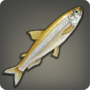
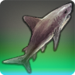
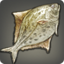
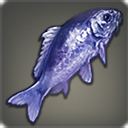

|
|
 |
Dravanian Smelt |
150 Rivers  | |
| A tiny freshwater fish native to the lakes fed by runoff from the Slate Mountains. |
Popular prey for dragonflies, who are said to only require a single adult to sate their appetites, this close cousin of the Abalathian smelt is abundant in the slightly warmer waters of the Dravanian forelands. |
|
Heavens Coral |
| 180 Floating Islands | |
| A lightweight sky-blue coral found growing on the floating islands above Eorzea. |
Scholars of marine life believe that heavens coral is merely blue coral that, after prolonged exposure to high concentrations of wind-aspected aether, have taken on a lighter blue tint. |
|
Sunsail |
| 180 Floating Islands | |
| A flying fish found in the skies near the Landlord Colony. |
During the daylight hours these cousins of the manasail sleep clinging to the undersides of the many islets comprising the Sea of Clouds. When the sun begins to set and the skies bleed orange and red, the sunsails simultaneously take to the cooling skies to feed. |
|
Goblin Bass |
| 180 Rivers | |
| Introduced to the Thaliak River by goblins, this variety of voracious bass has driven native species to the brink of extinction. |
Another variety of wavekin introduced to the Thaliak River by goblin fishers, the foreign bass poses a threat to the watershed's native flora and fauna by consuming nearly anything that is not a rock. |
|
Pterodactyl |
| 150 |  |
| A winged scalekin native to the Diadem. |
|
Eurhinosaur |
| 180 | |
| A rare scalekin that utilizes its highly developed air bladder to float above the Sea of Clouds. |
|
Gem Marimo |
| 150 | |
| A bright-green variety of aquatic moss found on the bottom of lakes. Slight currents cause the moss to gather and form into a ball as it grows. |
|
Crown Trout |
| 150 | |
| A freshwater fish native to the Diadem. |
|
Retribution Staff |
| 150 | |
| A large freshwater fish native to the Diadem. |
|
Thief Betta |
| 180 | |
| An aggressive freshwater fish native to the Diadem. |
|
Goldsmith Crab |
| 150 | |
| A tiny freshwater crustacean native to the Diadem. |
|
Amber Salamander |
| 210 Rivers | |
| This freshwater amphibian is characterized by whorling patterns of deep amber across its moist skin. |
The deep orange patterns on this wavekin's skin are similar to those found on several varieties of highly poisonous mushrooms. This convenient trait helps protect the salamander from hungry predators despite not possessing any toxins in its body...and being quite delicious. The amber salamander, himself, is aware of this fact, and will sometimes resort to cannibalism when other food is scarce. |
|
Gnomefish |
| 190 Rivers | |
| A decidedly ugly freshwater fish commonly found in and around the Thaliak River. |
The gnomefish is a gruesome creature that lives most of its life cowering beneath boulders in still or slow-moving waters so as to avoid being devoured by other larger fish. The tigerfish is one of these predators and will lurk nearby such boulders waiting for the rare occasion on which a gnomefish emerges to feed. |
|
Fleece Stingray |
| 210 Floating Islands | |
| The white belly of this flying fish native to the skies above Coerthas is ofttimes mistaken for a cloud. |
While its ancestors may have been wavekin, subsequent generations' extended exposure to submarine wind crystals has aided the fleece stingray's evolution into its current form. Great flocks (schools?) of the white-bellied rays are sometimes mistaken for swift-moving rain clouds. |
|
Nyctosaur |
| 210 Floating Islands | |
| A tiny winged dragon only recently discovered in the Churning Mists. |
The function of the enlarged comb which protrudes from the center of the nyctosaur's head has yet to be determined by the realm's naturalists, with some scholars believing it stores water, much like a dromedary's hump, while other believe it to be a hollow chamber which serves to deepen and amplify mating calls. |
|
Lava Snail |
| 210 Magma | |
| The lumpy shell of the lava snail is extremely heat resistant, protecting its tiny resident from otherwise unbearable temperatures. |
In addition to being diamond-hard, the shell of the lava snail can also block nearly all the heat from molten lava. Heat-resistant armor crafted by stringing together thousands of the shells has been known to sell for small fortunes. |
|
Priestfish |
| 210 Lakes | |
| A distant cousin of the monkfish, this ravenous resident of the lakes and swamps of Coerthas also possesses a luminescent proboscis which it uses to attract prey. |
The crozier-like bioluminescent proboscis dangling from the priestfish's forehead attracts prey in the murky depths of the pools in which this distant cousin of the monkfish resides. |
|
Coerthan Oyster |
| 210 Lakes | |
| A bivalved mollusk native to the lakes of Coerthas, and prized as a delicacy by Ishgardian nobles. |
The shells of these freshwater mollusks are so impenetrable that local fishers have dubbed them “the Fury's shields.” Luckily, prying them from the rocks upon which they live is as simple as sliding a knife beneath their shells and giving a slight pull upwards. |
|
Oliphant's Trunk |
| 210 Aetherochemical Spills | |
| Extended exposure to the unclassifiable aetherochemicals tainting the pools in which this fish-like creature lives has contributed to the abnormal development of its mouth and jaw. |
Similar to an electric eel, the near-blind oliphant's trunk emits low-frequency electrical pulses into surrounding waters in order to better locate its prey. |
|
Mountain Kraken |
| 210 Lakes | |
| A massive freshwater squid found in the lakes of Coerthas. |
For centuries, the legend of Saint Daniffen and the Kraken was thought to be only that─a fantastical tale spun by the See to beatify the life of an otherwise kindly, yet ordinary, man. That is, until a giant cephalopod was found lurking in a mountain lake. |
|
Armored Catfish |
| 210 Rivers | |
| This large freshwater fish is covered in thick armor-like scales which protect it from the jaws of hungry bears and yetis. |
Sharlayan scholars who studied this peculiar variety of catfish at length before returning to their homeland claim that the species is not a wavekin like its cousins, but rather a scalekin that, after many eons residing in water, shed its legs for fins. |
|
Magic Bucket |
| 1 Lakes | |
A fisherman's best friend. He sloshes instead of slobbers.
Use item to acquire the magic bucket minion. |
There was once a young fisher-cum-sorceress who, cursing the fact she was born with only two hands with which to carry her myriad tackle, called upon the power of unseen spirits to ensorcell a bucket to transport her catch...only to watch it sink to the bottom of a lake when her concentration was broken by a crayfish nipping at her ankles. |
|
Fat Purse |
| 210 Lakes | |
| A king among Coerthan puffers, and lord of the waters of Riversmeet. |
So plump does this rare Coerthan puffer grow when intimidated, that anglers began playfully comparing the fish to the bursting-with-coin purses oft flaunted by Ishgardian nobles. |
|
The Impaler |
| 210 Lakes | |
| A king among spring urchins, and lord of the waters of Dragonspit. |
One morning, while on patrol, a knight hailing from Falcon's Nest spied the fallen corpse of a Yeti near one of Dragonspit's bubbling pools. Upon further investigation, he determined the cause of death to be a massive urchin spine embedded in the creature's foot. An Ishgardian naturalist who later examined the spine estimated the original urchin at several yalms in diameter...give or take several yalms. |
|
La Reale |
| 210 Rivers | |
| A galleon among battle galleys, and dreadnought of the waters of Ashpool. |
This oversized battle galley with a tendency to stun its prey by ramming it with its sharp, pointed jaw, was named after a legendary steam-powered ship built by the Holy See to patrol the waters of the Bloodbrine Sea. |
|
Scaleripper |
| 210 Rivers | |
| A king among shadowhiskers, and lord of the waters of the Hundred Throes. |
Lost between drunken tales of swallowing Lalafells whole and swallowing a whole lot of Lalafells, is a hushed yarn spun in smoky taverns about a shadowhisker with an unnatural appetite for slightly larger prey─dragons. |
|
The Dreamweaver |
| 210 Lakes | |
| A king among warmwater bichir, and lord of the waters of the Smoldering Wastes. |
If the clickings of the Vath braveheart are to be believed, the soul of this elusive warmwater bichir rises each night from the Smoldering Wastes to invade his mind and torment his dreams. |
|
Meteortoise |
| 210 Magma | |
| A king among cometoises, and lord of the waters of Mourn. |
This mountain-dwelling tortoise will heat its shell until it glows meteor red, then leap from its lava pool, falling back first onto its prey to both slay and cook it in one fell stroke. |
|
The Ewer King |
| 210 Lakes | |
| A king among hinterlands perch, and lord of the waters of the Thaliak River. |
While the Thaliak River with its majestic waterfall the Tipped Ewer is home to countless creatures large and small, only one has the size, strength, and cunning to be crowned “king.” |
|
Vidofnir |
| 210 Lakes | |
| A king among noontide oscars, and lord of the waters of Eil Tohm. |
Incomparable size combined with a decided lack of pigment in this noontide oscar's skin invokes comparisons to the great white dragon, Vidofnir. |
|
The Soul of the Martyr |
| 210 Floating Islands | |
| A king among dragon's souls, and lord of the waters of the Landlord Colony. |
The moogles of Moghome insist that they have witnessed the passing of legendary Ratatoskr's essence into its secondary vessel─the very fish that lies motionless at the bottom of your bag. Let us hope they are mistaken. |
|
Inkfish |
| 210 Rivers | |
| A king among bubble eyes, and lord of the waters of Voor Sian Siran. |
Despite the suggestion by its name that this unique bubble eye goldfish has the ability to spit like a squid, the inkfish earns its name from the black patterns on its body thought to resemble the ever-changing whorls created when ink is spilled into water. |
 |
The Second One |
| 190 Floating Islands | |
| A king among tornado sharks, and lord of the waters of the Blue Window. |
As if there was not already “enough said” regarding tornado sharks, sightings of an even larger and more violent example of these freaks of nature have the Rose Knights on edge. |
|
Augmented High Allagan Helmet |
| 210 Aetherochemical Spills | |
| A king among high Allagan helmets, and lord of the waters of the Alpha Quadrant. |
With a shell even harder than a typical Allagan helmet, this biological aberration feeds by releasing a highly corrosive substance onto rocks, dissolving them into a foul solution which is then slurped back up using the wavekin's straw-like tongue. |
|
Aphotic Pirarucu |
| 210 Lakes | |
| A king among euphotic pirarucu, and lord of the waters of the Delta Quadrant. |
Unlike euphotic pirarucu which remain near the surface, these wavekin, for some reason, chose to ignore their species' natural attraction to the light and instead remain and feed on the sediment that collects in deep water. The high mineral content of this sediment results in rock-like scales unseen on the aphotic pirarucu's cousins. |
|
Dimorphodon |
| 240 Floating Islands | |
| This rarely seen winged scalekin is thought to be lord of the skies adjacent the Sohm Al summit. |
Do not be fooled by its size. The dimorphodon may be five to seven times smaller than its wyvern cousins, but its temperament is twice as foul, and its appetite four times as large.*
�
�*All values listed here have no basis in scientific fact. |
|
Basking Shark |
| 240 Floating Islands | |
| The basking shark's characteristic colossal maw makes it the de facto lord of the skies near Mok Oogle Island. |
The massive maw of this rarely seen colossus of the clouds is thought to serve two distinct purposes─one, to devour entire coveys of prey in a single gulp, and two, to dramatically increase air resistance allowing for near instant aerial stops and turns. |
|
Allagan Bladeshark |
| 240 Aetherochemical Spills | |
| Only found near the Flagship in Azys Lla, the bladeshark is an alpha predator with few enemies─a true lord of the skies. |
Military documents retrieved from Azys Lla reveal that the bladeshark is a chimerical monstrosity created to serve as a biological weapon. The rapid vibrations exhibited in the creature's unnaturally elongated mouth is a trait artificially induced by scientists to increase the tearing power of its razor-sharp teeth. |
|
Hailfinder |
| 230 Skies | |
| A king among rime eaters, and lord of the skies near Greytail Falls. |
Similar to its smaller rime eater cousins, the hailfinder is also known for its appetite for glacier cores. So efficient is the creature at absorbing the extreme cold emitted by its prey, that research was conducted by the Heavens' Ward into determining if they might be used to counter Shiva's sub-zero sorceries during skirmishes with the primal. |
|
Flarefish |
| 230 Lakes | |
| A king among sorcerer fish, and lord of the waters of the unfrozen pond. |
Believed to be the sole reason the unfrozen pond remains free of ice, in order to partake in the warmth emitted by the flarefish's sanguine humours, other fish will form schools (at a distance), surrounding the specimen in a barrier which effectively provides protection from larger predators. |
|
Twin-tongued Carp |
| 230 Rivers | |
| A king among three-lip carp, and lord of the waters of the Whilom River. |
With three lips and two tongues, this rare carp has enough internal and external appendages to render any respectable ichthyologist flummoxed. |
|
Madam Butterfly |
| 230 Lakes | |
| A queen among Orn butterflies, and lady of the waters of the Quickspill Delta. |
There is the sad tale of a pair of butterfly fish kept by a Sharlayan sophist. When preparations for the great exodus back to the Old World were being made, the sophist's manservant separated the two fish to prevent scale damage in transit. An error in packing, however, saw one of the fish─the female─left behind. Madam has since lived her life in sadness awaiting her husband's return. |
|
Moggle Mogpom |
| 220 Lakes | |
| A king among mogpoms, and lord of the skies near Greensward. |
Considerably larger than most mogpoms, the moggle mogpom is believed not only to be the discarded pom of a fallen comrade, but the pom of legendary Moghome chieftain, Moggle Mog. |
|
Cirrostratus |
| 230 Floating Islands | |
| A king among fleece stingrays, and lord of the skies off Cloudtop. |
Named for the thin summertime clouds it resembles, the cirrostratus is believed to achieve flight despite its enormous size due to its parchment-like membranous “wings.” |
|
Hraesvelgr's Tear |
| 220 Magma | |
| A king among Aithon's colts, and lord of the lava pools of west Mourn. |
The pristine glass shell encompassing this remarkable magma-dwelling creature is regarded amongst vivarists as to be the Twelve's most beautiful creation, and therefore is highly sought within collectors' circles. |
|
Aetherochemical Compound #666 |
| 230 Aetherochemical Spills | |
| A king among aetherochemical compounds, and lord of the aetherochemical spill. |
When a specimen of what, at the time, was thought to be compound #123 began sprouting tiny...decidedly Lalafellin...hands, no fewer than three Sons of Saint Coinach naturalists turned in their resignations with the organization and have since disappeared from the public eye. |
|
Hundred-eyed Axolotl |
| 230 Lakes | |
| A king among tiny axolotls, and lord of the waters near the Pappus Tree. |
A rare mutation of the tiny axolotl, the countless spots covering this peculiar wavekin's moist skin serve as a defense mechanism, frightening would-be predators into thinking they are being watched by a hundred eyes. |
|
Bobgoblin Bass |
| 230 Rivers | |
| A king among goblin bass, and lord of the waters of the Thaliak River. |
The one fish that has long eluded renowned Illuminati angler Quickthinx Allthoughts, the bobgoblin bass earns its name from the queer bobbing motion it oft employs to, in Quickthinx's words, “taunt his would-be pursuers.” |
|
Merciless |
| 220 Rivers | |
| A queen among mercy staves, and lady of the waters of Banepool. |
After a three-bell ale-fueled diatribe regarding one man's futile quest to capture the elusive Merciless─a mercy staff fattened to epic proportions─the proprietor of the tavern in which the forlorn fisher oft frequented closed the man's tab, telling him, “let it all go.” |
|
Bishopfish |
| 250 Lakes | |
| An archbishop among priestfish, and lord of the waters of Clearpool. |
The divine radiance emitted by the bishopfish's cranial proboscis is like to dazzle many a smaller fry into literally “giving its life” for the cloth. |
|
Captain Nemo |
| 240 Lakes | |
| A king among ammonites, and lord of the waters of Banepool. |
Named after a legendary inventor and sea captain who claimed to have traveled to the bottom of the Indigo Deep in a watertight galley hull, this overgrown ammonite uses aether-charged tentacles to deftly slice prey into pieces small enough to fit in its surprisingly tiny mouth. |
|
Paikiller |
| 240 Lakes | |
| A king among catkillers, and lord of the waters of the Eddies. |
Already in shock from the discovery of a freshwater pike that consumes gaelicats, the scientific community was far from prepared for the subsequent discovery of a pike that prefers paissa. As was the case with the “catkiller,” naturalists insisted on keeping the name as short as possible, and thus settled on “paikiller,” despite complaints that it too closely resembled the word “painkiller.” |
|
Ceti |
| 240 Aetherochemical Spills | |
| A king among oliphant's trunks, and lord of the skies near the Hyperstellar Downconverter. |
Modern naturalist circles were positively abuzz following the discovery of an Allagan tomestone which contained an article on an oliphant's trunk with a maw so sensitive, that it was believed the wavekin could detect activity in the very heavens. Further study of the work however led to the conclusion that the piece was satire. |
|
Crystal Pigeon |
| 240 Floating Islands | |
| A king among stupendemys, and lord of the skies near the Habisphere. |
While much of the information gathered from the Habisphere's talkative nodes is limited to occupancy numbers and repair reports, one audio record concerning an elite marksmen's club's afternoon of sniping genetically enhanced stupendemys for sport gives us a rare glimpse into Allagan everyday life. |
|
Thunderscale |
| 230 Rivers | |
| A king among amber salamanders, and lord of the waters of the Iron Feast. |
Having no other explanation as to why this lone amber salamander would exhibit the ability to emit electric shocks from its skin, the fisher who first discovered this unique wavekin simply assumed that it was because it fed upon the shed scales of a thunder dragon. As of this writing, no one has been able to confirm or deny her claim. |
|
Riddle |
| 240 Magma | |
| A king among magma lice, and lord of the magma flows in Anyx Old. |
While the riddle from which this aged magma louse earns its name is far from what anyone would deem clever─“what lives in molten rock, yet moves less than a corpse?”─it is fairly accurate in describing the vilekin's two main characteristics. |
|
The Lord of Lords |
| 230 Magma | |
| A king among lavalords, and unquestioned ruler of the magma flows near Halo. |
Those naturalists who have placed aside their doubts and come to accept the existence of the fantastical magma-dwelling lavalords have, in their research, discovered the wavekin possess a violent “lord-eat-lord” societal hierarchy, and that rampant cannibalism appears to be the reason only a single male is ever found in a lava pool. |
|
The Speaker |
| 240 Rivers | |
| A king among armored catfish, and lord of the waters of the Upper Thaliak river. |
The first fisher to supposedly ever have caught the Speaker claims that upon drawing it into his net, the wavekin spoke to him in an oddly ranine voice─pleading to release him back into the waters that he may return to his loving wife and spawn. Thinking it some sort of sign from the Twelve, the fisher did as he was told, only to be rewarded with a croaking cackle and a slap of water in his face. |
|
Thousand Fin |
| 230 Lakes | |
| A king among hundred fins, and lord of the pools of Weston Waters. |
While “one thousand” may be a gross overstatement regarding the number of tiny fins that circle this queer wavekin's head, for the moogles who are known to utterly despise the hundred fin, achieving numerical accuracy is not a high priority in the event one is encountered in the wild. |
|
Bloodchaser |
| 250 Floating Islands | |
| A king among storm chasers, and lord of the skies near Tharl Oom Khash. |
This peculiar storm chaser exhibits fins that are a deep crimson, hence the colorful name. Despite local Vanu Vanu legend which claims the contrary, Bloodchaser does not appear to drain the humours of its victims, but feeds just as any other storm chaser─digesting prey in its stomach to produce gas that it emits from its rectum to achieve propulsion. Yes, you read that correctly. |
|
Problematicus |
| 250 Magma | |
| A colossal magma-dwelling fish and legend of the lava pools near Halo. |
When this particular specimen was presented at a naturalist symposium for classification, the day ended in a flurry of fisticuffs following a heated argument over whether it was not merely a fake stitched together in a cluttered study. The following day the claims were voted baseless and the wavekin received its new official name. |
|
Opabinia |
| 250 Aetherochemical Spills | |
| A rarely seen Allagan abomination rumored to dwell in the aetherochemical pools collecting on the Flagship in Azys Lla. |
One can only imagine the manner of twisted carnal desires which drove the Allagan bioengineer who created this five-eyed, tentacled monstrosity. |
|
Armor Fish |
| 250 Rivers S (1) | |
A massive glowing freshwater fish found living in the Thaliak River.
[Suitable for display in aquariums tier 1 and higher.] |
Many graduates of new Sharlayan's universities look back on their education with great fondness, reminiscing of days past with tales of studying for exams into the small hours, their rooms lit with naught but the faint glow emitted by armor fish caught in the Thaliak River. |
|
Sea Butterfly |
| 250 Floating Islands | |
| Though oft referred to as king of the skies near Mok Oogl Island, to claim this floating mollusk is elusive would be a gross understatement. |
Lighter than the seed of a dandelion, the sea butterfly flitters about the Sea of Clouds searching for the tiny midges upon which it feeds. So rare are these mollusks that seeing one is widely believed to bring good fortune. |
|
Charibenet |
| 250 Lakes | |
| Lord of the waters of Clearpool, Charibenet is (was) one of the largest, most voracious ice faeries to ever be captured. |
After witnessing the veracity with which it devoured its kin, it almost seemed wrong not to name this gluttonous ice faerie after the Holy See's infamous First Inquisitor. |
|
Raimdellopterus |
| 250 Floating Islands | |
| The moogles of Moghome say that one can live his entire life without ever witnessing a raimdellopterus descend from the upper reaches of Tharl Oom Khash. They also say that some moogles spend a lot of their lives sleeping. |
Also known as the “king of the wyverns,” the raimdellopterus was given its official name in honor of the bicentennial of Frandelont Raimdelle's masterwork, the Raimdelle Codex. |
|
Thavnairian Leaf |
| 142 Rivers | |
| A freshwater fish originally native to the Near Eastern island of Thavnair. How they ultimately ended up in the upper Thaliak River remains an enigma. |
The colorful patterns which cover the Thavnairian leaf's body make it a popular addition to aquariums. Once almost impossible to acquire on mainland Eorzea, the Near Eastern native's recent introduction to the Thaliak River has seen its asking price drop from “wholly ludicrous” to “somewhat absurd.” |
|
Ghost Faerie |
| 145 Lakes | |
| An almost entirely transparent shell-less mollusk found solely in the waters of Clearpool. |
In contrast to ice faeries which, while possessing transparent bodies, still display coloring in their internal organs, ghost faeries are entirely without pigment, making them almost impossible to see in the pristine waters of their natural habitat─Clearpool. |
|
Red Sky Coral |
| 148 Lakes | |
| A blood red species of coral found growing on the undersides of islands in the Sea of Clouds. |
Similar in almost every way to the red coral found in Eorzea's five seas, scholars remain perplexed at just how this particular breed of immobile wavekin came to live in the Sea of Clouds. |
|
Lovers' Clam |
| 150 Rivers | |
| A tiny pinkish bivalve mollusk found primarily in Weston Waters. |
A popular game amongst Eorzean children consists of putting separate halves of lovers' clam shells in two sacks, and having boys draw from one, and girls from the other. The participants then look to see who has the other half of their shell, the resulting pairs being an augury of true love. |
|
River Shrimp |
| 160 Rivers | |
| A rare freshwater shrimp that typically makes its home beneath the rocks that produce the rapids near the Hundred Throes. |
When asked which decapod crustacean was their favorite supper treat, nine out of ten orphans claimed they preferred freshwater river shrimp to ordinary saltwater shrimp. All nine claimed one was never enough, and that they would always ask for seconds, to which the reply was consistently, “MORE!? YOU WANT MORE!?” |
|
Peteinosaur |
| 220 | |
| A winged scalekin recently discovered in the skies near the Diadem. |
|
|
Comet Minnow |
| 205 Rivers | |
| Near the bottom of the food chain, swift-swimming comet minnows serve as food for many of the larger fish that swim the waters of the Hathoeva and Velodyna Rivers. |
Stargazers tell of a deity's long descent through the night sky to shine amid murky waters, and claim the fires of the heavens still burn upon its scales. Aquaculturists generally espouse cynicism toward such out-of-this-world origin stories. |
|
Golden Cichlid |
| 205 Lakes | |
| This bright-yellow fish is native to Gyr Abania and found in both the Hathoeva and Velodyna Rivers, sometimes as far west as East End. |
Cichlids named for the glittering scales unique to adult males, which garner the attention of mates and predators alike. The survival of the species undoubtedly owes more to the subdued, aptly camouflaging blue hue featured by its widows and orphans. |
|
Abalathian Bitterling |
| 205 Lakes | |
| The Abalathian bitterling's ivory white skin easily distinguishes it from its silver cousins also found in the freshwater rivers and lakes of Gyr Abania. |
The bitterling's lack of pigmentation is not the result of mutation or albinism, but rather the product of natural selection, as only the fairest among them were able to blend into the riverbed gravel and avoid predation. |
|
Idle Goby |
| 205 Rivers | |
| This large goby uses its natural black and brown mottling to conceal itself in the sandy bed of the Slow Wash. |
One would have to wake up pretty early in the morning to out-slack this notoriously lackadaisical loiterer. Its primary hunting technique consists of lying stagnant in the Slow Wash and waiting for its prey to drift up to it. |
|
Steelhead Trout |
| 205 Rivers | |
| A delicious, fatty freshwater fish native to the Velodyna and Hathoeva Rivers. |
Life carries this fish back-and-forth, swimming down to estuaries when reaching age, then back upstream to spawn, lending its name to widespread, on-the-nose “seasonal rebirth” clichés in Hingan literature. |
|
Broken Crab |
| 205 Rivers | |
| A wildly misnamed freshwater crab with a highly durable carapace. |
Possessed of a shell no living creature could crack, the crab's hubris grew so great as to warrant the notice of Rhalgr, who by his very hand split its shell asunder for eternity, or so it is said. |
|
Miounnefish |
| 205 Rivers | |
| This feisty freshwater fish is found throughout the Black Shroud. |
Pipira, indigenous to the Black Shroud, were successfully transplanted into the climes of Gyr Abania, where they bear the name of the guildmaster largely responsible for their change of address. |
|
Temple Carp |
| 205 Lakes | |
| A freshwater fish commonly found in the lakes and marshes dotting the eastern end of Abalathia's Spine. |
Long ago, disciples of the Fist were made to catch these fish by hand as part of their training regimen. The fish remain a testament to the preparedness of the Fist, now loosed in nearby waters to serve as a bulwark against starvation in the case of a siege. |
|
Balloon Frog |
| 205 Rivers | |
| A hardy amphibian found in the relatively warm-watered lakes of eastern Abalathia's Spine. The plump legs make for a fine meal. |
Named for the cheek-puffing posture it manifests when threatened, which can be seen as either intimidating or adorable, depending on your position in the food chain. |
|
Lantern Marimo |
| 205 Lakes | |
| A rare type of luminescent moss found in the lightless depths of Far Eastern lakes, as well as in caves. Slight currents cause the moss to form into a ball as it grows. |
Many a monk has reached enlightenment meditating before the faint aura emitted by this illuminating breed. |
|
Rapids Jumper |
| 220 Rivers |  |
| A lifetime of swimming against strong, yet slow river currents have left this freshwater fish bereft of most fatty flesh. |
This species often fails to live up to the fanfare inferred from its fast-paced, go-against-the-flow name, as the only flow it has to go against is the Slow Wash. |
|
Adamantite Bichir |
| 205 Lakes | |
| A freshwater fish native to the wetlands of Gyr Abania. |
Clad in hard, interlocking links that resemble a suit of mail more than they do scales, this fish is known to leave a trail of broken muud suud teeth in its wake. |
|
Bone Melter |
| 205 Lakes | |
| This lake snail feeds by attaching itself to the bones of drowned animals. |
Necrophagous whelk that flocks to carcasses en masse, whittling them down to next to nothing. Morbid feeding habits aside, it does have a pretty shell, which hunters carry around for luck. |
|
Fallen Leaf |
| 210 Lakes | |
| The still waters of Dimwold are teeming with these fish who, to the untrained eye, appear naught more than fallen leaves. |
If a tree falls in the woods, and there is no one there to see it, do the leaves that fall in water become possessed by migrant spirits and generate a new species of fish? |
|
Velodyna Grass Carp |
| 205 Rivers | |
| This variety of grass carp is most often found in the northeastern Eorzean river from which it earns its name. |
Midsized, yet critical, link in the food chain of the river valley from which it borrows its name. |
|
Highland Perch |
| 215 Rivers M (2) | |
Once common throughout the Gyr Abanian highlands, overfishing has relegated the remainder of the species to Mirage Creek.
[Suitable for display in aquariums tier 2 and higher.] |
If you ever wish to see two natural historians at each other's throats, try asking them what the difference between a Hinterlands Perch and a Highland Perch is. Wars have been waged over less hotly contested disputes. |
|
Greenstream Loach |
| 210 Rivers | |
| This distant relative to the carp can be found hunting the waters of the Hathoeva and Velodyna Rivers. |
There's no prying this intractable flatfish loose once it deploys its ventral fin for suction, and its aptitude for withstanding the most violent of currents have rendered its name synonymous with obstinacy. |
|
Mirage Chub |
| 210 Rivers | |
| This freshwater fish is known to change the color of its skin come spawning season. |
Some might pass this silver fish off as commonplace at first glance, but when the season is right and she dons her ravishing red sash, you can bet they'll take notice. When ready to breed, her unique scale pattern generates a stunning visual effect meant to mesmerize mates and other admirers. |
|
Padjali Loach |
| 210 Lakes | |
| A horn-shaped fish native to the dark bogs of Dimwold. |
Its strict algae diet keeps this fish in pristine health, giving it a fresh, delectable flavor that fetches top gil with Gyr Abanian fishmongers and renders it a worthy tribute to the Padjal. This demonstrates that contrary to common perception, a life of healthy eating is not always in a species' best interests. |
|
Gyr Abanian Trout |
| 210 Rivers | |
| This succulent pink-fleshed fish commonly found in the Hathoeva and Velodyna Rivers will oft command a high price in local markets. |
Anyone who's ever been to Gyr Abania is likely to have seen one, and even more likely to have eaten one, as this particular trout is deemed a local specialty. |
|
Bloodsipper |
| 210 Rivers | |
| This freshwater crustacean is widely found in lakes and marshes across the Three Great Continents. |
The popular misconception that this sanguine crustacean slices mammals with its claws and partakes of their blood is patently false, but believable enough to have inspired its moniker. |
|
Monk Betta |
| 210 Lakes | |
| This freshwater betta is native to the lakes and marshes of eastern Gyr Abania. |
Exhibiting an austere warrior spirit and fierce territorial aggression, violence among fellow fish of the order is often marked by vicious brutality. |
|
Gilfish |
| 210 Lakes | |
| The Far Eastern gilfish was first introduced to Eorzea by Othardian merchants hoping their platinum sheen would make them attractive to wealthy nobles. Now the freshwater fish can be found in rivers and lakes across the realm. |
Glamorous per its name, one glint of this fish's ostentatious scales is often enough to invite avaricious wish-chasers to a watery grave. |
|
Falling Star |
| 210 Lakes | |
| This glowing orb is actually a colony of rare luminescent algae found in the caves of eastern Gyr Abania. |
Denomination for a faintly luminescent subset of algae, their phosphorescent fires allegedly lit long ago by the burning star cast forth by Rhalgr. |
|
Capsized Squeaker |
| 210 Lakes | |
| This odd whiskered fish is found only in the sheltered waters of the Comet's Tail. |
Having the unusual habit of swimming upside down in common suggests some relation between this squeaker and its Dravanian cousin, although the precise distance of said relation is yet to be established. |
|
Nirvana Crab |
| 210 Lakes | |
| The backs of these freshwater crabs are adorned with colorful colonies of water-resistant fungus. |
It is said an underachieving monk achieved enlightenment in a single night. On inspecting his bedchambers, the assembled throng of disciples received the wordless sermon of this crab holding up a white mushroom. |
|
Gravel Gudgeon |
| 210 Rivers | |
| This freshwater fish will bury itself deep in the gravel-littered beds of rivers, making it a difficult catch. |
Succulent fish whose only refuge from the talons of griffins lies nestled under the riverbed. Seldom, if ever, has one been spotted with scales intact. |
|
Grinning Anchovy |
| 210 Deep Sea | |
| These small saltwater fish swim in massive schools, using their sheer numbers to ensure that even if a few stragglers are swallowed, the species will endure. |
This fowl-mouthed forage fish often plumbs the depths of Hingan cauldrons, its juices boiled out to form the base of beloved broths. |
|
Glass Herring |
| 210 Deep Sea | |
| This common silver fish will travel back and forth between the Ruby Sea and the Glass Ocean searching for food. |
This migratory fish thrives under transparency, unlike its misleading red cousins. Its brine-pickled eggs foreshadow deliciousness. |
|
Hellyfish |
| 210 Deep Sea | |
| The abundance of these translucent amorphs to the volcanic island of Hells' Lid was an invitation to a ill-conceived moniker, most likely given by a rum-soaked pirate. |
Tormented soul that has ventured from the bowels of the underworld through a hellmouth to claim the lives of mortals with its virulent venom. Petting not recommended. |
|
Ruby Coral |
| 210 Deep Sea | |
| A piece of sharp crimson coral, widely found throughout the Ruby Sea. |
More commonly known as “Reef Ruby” or “Peasant Ruby”, you'll find no shortage of this ostensible gemstone polished and set in the trinkets of Hingan traders. |
|
Sapphire Coral |
| 210 Deep Sea | |
| A piece of sharp azure coral, widely found throughout the Ruby Sea. |
Luckily for the survival of the species, this sapphiric simulant has failed to come in vogue with the Hingan fashion-conscious as has its equally alluring ruby cousin. |
|
Bone Coral |
| 210 Deep Sea | |
| A piece of sharp milky white coral, widely found throughout the Ruby Sea. |
Virtually indistinguishable from mammalian bones, this coral can cause quite a commotion upon washing ashore, and often engenders a sense of foreboding in sailors of the East. |
|
Ruby Shrimp |
| 210 Deep Sea | |
| One of the most common shrimp found in the Ruby Sea. |
For all their differences, the people of Othard and Hingashi have always had one thing in common, as these zesty and succulent prawns are loved on all sides of the Ruby Sea. |
|
Coeurl Snake Eel |
| 215 Deep Sea | |
| Scholars are divided as to whether this wavekin native to the Ruby Sea and Glass Ocean is in fact a snake or an eel. |
For decades, the taxonomy of this species had been the subject of fierce tripartite debate, driving the aquatic nomenclature community to the brink of schism, until a compromise was reached whereby the creature would simply be known by all three names. |
|
Heather Charr |
| 215 Rivers | |
| A unique variety of freshwater charr found only in the waters near Heather Falls. |
The social struggle for dominance this species encounters in schools are often on display at the base of the waterfall, which the fish treat as a sort of cafeteria. When a water-struck insect falls before them, the fish move quickly to judge it, as if asking “what's your damage?” before descending upon it. |
|
Electric Catfish |
| 215 Lakes | |
| This massive whiskered wavekin can be found lurking in the calm, turbid lakes and marshes of eastern Gyr Abania. |
The unenlightened claim that Rhalgr bestowed the divine might of thunder upon this catfish in recognition of its zealous devotion, but aquariophiles dismiss these silly claims, knowing the breed to be terribly irreverent. |
|
Death Loach |
| 215 Lakes | |
| This particular variety of loach can be found in the lakes, rivers, and swamps of northern Gyr Abania. |
This fish gives new meaning to “the sweet kiss of death”, as wars have been waged over its delectable flesh, hence its fateful name. |
|
Grymm Crab |
| 215 Lakes | |
| A succulent freshwater crab remarkably found only in the Peaks lake of Grymm. |
A tragic crab named for a man who nearly perished of thirst while fleeing the floods of the Sixth Umbral Calamity, only to eventually drown guzzling the first fresh water he stumbled upon. |
|
Invisible Crayfish |
| 215 Rivers | |
| The pristine white shell of this freshwater crustacean makes it nigh invisible when the wavekin is hiding amongst rocks or sand of a similar hue. |
This crawdad is best known to Gyr Abanians via the faerie tale in which its brilliant shell fades with each cycle of the Slow Wash, until only an empty white palette remains. |
|
Abalathian Salamander |
| 215 Lakes | |
| An amphibian commonly found living in the myriad lakes and swamps of Gyr Abania. |
Wavekin that plays the runt among its kith. It's rubbery flesh results in an unappetizing texture when cooked, rendering it for all practical purposes inedible. |
|
Cave Killifish |
| 215 Lakes | |
| These small fries found primarily in the caves of Gyr Abania rarely grow to more than one or two ilms. |
Rugged little fry with the wherewithal to thrive in even the dankest, darkest subterranean climes, though it is unclear how they ever got there in the first place. |
|
Rhalgr's Bolt |
| 215 Rivers | |
| This eel-like freshwater fish has been blessed with the capacity to emit an electric charge that can prove deadly to smaller wavekin. |
When this electric eel shocks and awes its prey like a god of thunder, the victim rocks and rolls, and the spell it's under slowly robs it of its soul. |
|
Butterfly Fish |
| 215 Deep Sea | |
| One of few brightly colored fish native to the Ruby Tide. |
Though indigenous to southern waters, now and again a papilliferous wanderer will lose its way and flutter mindlessly into the Ruby Sea. |
|
Dafu |
| 215 Deep Sea | |
| Its sheer dominance over other life in the Ruby Sea has earned this sizable wavekin the title “dafu,” or literally, the top dog...er, fish. |
From an ancient Far Eastern term for “genius” or “master of its trade,” its name speaks to the inspiring artistry on display in this magnificent specimen. |
|
Leaf Tatsunoko |
| 215 Deep Sea | |
| At a glance, one might mistake this queerly shaped denizen of the Ruby Sea for an errant piece of seaweed. |
An eccentric protrusion enables this seafarer to evade predators by posing as algae, which it also relies on for cloaking its eggs. |
|
Glass Flounder |
| 215 Deep Sea | |
| This flat bottom dweller spends most of its life skittering about the floors of the Glass Ocean, but can also be found in the Ruby Sea. |
Flat sheet of a fish that pairs wonderfully with grog when properly stewed. Makes an easier-to-chew entree than its name might imply. |
|
Gliding Fish |
| 215 Coastlines | |
| A unique saltwater fish that will jump from the water to evade predators, using its pectoral fins to glide across the ocean surface. |
Per its name, this nautical drifter skitters gracefully along the water's surface on the lift of its aliform fins, though its hurried scurrying to escape predators occasionally lands it smack onto a fishing boat floor. |
|
Globefish |
| 215 Coastlines | |
| A saltwater fish that will puff its spike-laden body to bursting to protect itself when provoked. |
When faced with immediate danger, this fish pulls its best bombfish impression, puffing up its proportions and projecting spines to dissuade would-be diners from digging in. |
|
Fan Clam |
| 215 Coastlines | |
| The shell of this bivalve mollusk is ribbed like the “uchiwa” hand fans used by Hingan festival-goers in summer. |
Though it maintains an avid following in Isari, the “fan” of this bivalve mollusk's name actually refers to the flabelliform shape of its exoskeleton, as any reasonable person would naturally conclude. |
|
Striped Fugu |
| 215 Deep Sea | |
| Similar to the globefish, the fugu will puff up its body to frighten away potential predators. Those who do not heed the wavekin's warning and devour it anyway will most certainly succumb to the lethal poison found in the fugu's flesh. |
Beyond the potentially fatal toxins of its liver and ovaries lies a flavor to die for, as survivors will attest. |
|
Ruby Meagre |
| 220 Coastlines | |
| Similar to a bass in appearance and flavor, the similarities end there, with this variety of meagre preferring the coastal waters of the Ruby Sea and the Glass Ocean to fresher rivers and lakes. |
Don't let the name fool you; this shoal-dweller is anything but meager when it comes to flavor. Delicious any way you slice or cook it, Isari anglers are always on the lookout for what ultimately constitutes a staple of their diet. |
|
River Barramundi |
| 220 Rivers | |
| Called “akame” or “red eye” in the Far East for the unique color of this freshwater fish's optical organs. |
Despite its name, phylogeny suggests that this fish is actually more carp than barramundi, though the herons and other avians that feed off of it don't seem to mind. |
|
Nogoi |
| 220 Lakes | |
| A common variety of koi found in almost every region on Othard. |
Yanxia has found itself overrun by this species with a formulaic overpopulating blend of longevity and hyperactive libido. The “no” of its name aptly deriving from the Hingan for “wild”. |
|
Pagan Pirarucu |
| 220 Lakes | |
| Though only ever seen by fishers who spend more time telling tales in taverns than actually fishing, the pagan pirarucu can supposedly be found in the highland lakes and swamps of eastern Gyr Abania. |
An unorthodox variety of catfish upon which Rhalgr did not see fit to bestow his gift of thunder, hence it has little more than its biting wit with which to fend for itself. |
|
Enid Shrimp |
| 220 Lakes | |
| A succulent freshwater shrimp remarkably found only in the Peaks lake of Enid. |
Shrimp bearing the name of a woman who perished with her husband Grymm while fleeing the floods of the Sixth Umbral Calamity. It is said she died of drinking too much water while trying to slake an unquenchable thirst. |
|
Black Velodyna Carp |
| 220 Rivers | |
| One of several varieties of carp found in the Velodyna River, this particular species is immediately recognizable from its pitch-black skin. |
The rivers of Velodyna and Hathoeva are rife with these hungry natators, whose ebon exterior derives from a dark diet. |
|
Yanxian Koi |
| 220 Rivers | |
| A mottled freshwater carp of middling size native to the southern reaches of the One River. |
The One River is flooded with this species, which is surprisingly nutritious if you can look past its muddy stink and abundance of small sharp bones. Locals are wont to drench it in liquor and sugar and let soak until palatable. |
|
Longhair Catfish |
| 220 Rivers | |
| Though named for its lengthy whiskers, this catfish's most ready feature is not its moustache, but the wavy scale-like patterns on its back. |
Meandering purposefully along the bed of the One River, this fish's signature whiskers exude an air of solitary sagacity befitting its unofficial “hermitfish” appellation. |
|
Doman Trout |
| 220 Rivers | |
| An extremely common fish found throughout Yanxia, and a popular dish amongst the realm's residents. |
Run-of-the-mill trout found far and wide across Yanxia. Whoever said cats won't touch them has never owned a Doman cat. |
|
Yanxian Barramundi |
| 225 Rivers M (2) | |
This large carnivorous specimen is native to the southeastern reaches of the One River where the waters run slow and deep.
[Suitable for display in aquariums tier 2 and higher.] |
Tall tales abound around the One River, but have you heard the one about the fish bigger than a full-grown Hyur? The ecstasy of reeling in the fabled monster is soon offset by the realization one must then haul it all the way back home. |
|
Tail Mountains Minnow |
| 225 Rivers | |
| These tiny fish commonly found in the many shallow tributaries feeding into the upper One River rarely grow beyond a few ilms in length. |
Who says minnows can't move mountains? The red peaks of their homeland hoisted firmly upon their backs, these little-fish-that-could are quite a sight to see, drawing onlookers from far and wide eager to take a peek. |
|
Killifish |
| 225 Rivers | |
| This freshwater specimen of miniscule proportions can be found in almost any river and lake from central to eastern Othard. |
These lovable little lads are a regular attraction at the fairs of the Far East. Eager younglings line up to test their skill and take one home, whereupon the fish are free to ravage local fish populations with plague and make good on their name. |
|
Doman Crayfish |
| 225 Rivers | |
| These tiny freshwater crustaceans can be found in relative abundance in the flooded rice paddies of Yanxia. |
Head to a countryside creek in Yanxia on a warm summer's day and you'll be sure to see children fishing out these crustacean critters, which are as common as they are harmless. |
|
Othardian Trout |
| 225 Rivers | |
| A freshwater fish found in rivers across the entire Othardian continent. |
A familiar face anywhere you journey on the subcontinent, its ubiquity has led to innumerable interpretations of a multitude of dishes all across Othard. Indeed nowhere is safe for this fish. |
|
Zagas Khaal |
| 225 Rivers | |
| A freshwater fish extremely common to many of the One River's northern tributaries. Its name literally translates to “river fish.” |
Ask a nomad of the Azim Steppe to blurt out the first fish that comes to mind, and without fail you will hear the name of this pervasive species, followed by an awkward silence. |
|
Steppe Skipper |
| 225 Rivers | |
| A swift freshwater fish that, when swimming near the surface of the One River tributaries in which it is commonly found, appears to skip through the rivers' reeds. |
This fish's aerodynamic green fins allow it to jump to conclusions rather than go through the motions. The Auri Xaela, who know a thing or two about shortcuts, regard the steppe skipper as a portent of good things to come. |
|
Sun Bass |
| 225 Lakes | |
| This violent fish native to the Azim Steppe prefers the calm waters of a lake or wetland to the swift moving currents of a river. |
Azim in the sky is said to partake of this fish fit for a god, though you'll want to think twice before partaking yourself, as the parasites that riddle its body have proven potentially fatal to less-than-divine diners. |
|
Dawn Crayfish |
| 225 Rivers | |
| A red-shelled freshwater crustacean found in abundance in the lakes and rivers of the Azim Steppe. |
Devoted disciple of the Dawn Father who battles his sworn enemy for control of the Azim Steppe, and rises as his rival sets. |
|
Curtain Pleco |
| 230 Rivers | |
| This freshwater fish has a billowy, curtain-like dorsal fin that it uses to confuse predators. |
Migratory fish with a giant curtain-like dorsal fin, which it lifts to move along until the day it bows out in its final act. |
|
Yat Goby |
| 230 Rivers | |
| The Yat goby is an eel-like bottom dweller named after the Azim Steppe tributary in which it is most commonly found. |
The winsome-faced bottom-feeder wields its fin with the dexterity of a finger, delicately digging into the riverbed to dine on only the finest sediment. |
|
Nhaama's Boon |
| 230 Lakes | |
| One of the rare fish found in the Nhaama Desert's even rarer freshwater oases. |
A fish held in the highest esteem by desert denizens, who deem it a gift from the Dusk Mother herself. It's edible, but far from transcendent. |
|
Doman Eel |
| 230 Lakes | |
| A thin freshwater eel that can be found living amongst the reeds growing in the Valley of the Fallen Rainbow. |
A stable source of sustenance through times both thick and thin, these eels have had a profound impact on the culinary culture of Doma, but attempts to farm them have thus far met with failure. |
|
Brassfish |
| 230 Lakes | |
| This brightly colored freshwater fish of Far Eastern origin is a favorite amongst aquarium owners. |
Sharing color with the metal alloy of its name, this fish has been chromatically cultivated to achieve a variety of metallic hues, resulting in warehouse-worths of industrial fish. |
|
Dry Steppe Skipper |
| 230 Rivers | |
| A small freshwater fish found in the arid southern grasslands bordering the Nhaama Desert. |
Unlike its purportedly “lucky” brethren, encountering this withering-grass-colored variety of steppe skipper is regarded as an omen of ill fortune among nomads. Dry humor is often lost on the superstitious. |
|
Skytear |
| 230 Rivers | |
| The skytear can be found in the quick-flowing shallow rapids near a river's source rather than in the deeper, slow-moving waters downstream. |
This fish receives its melancholy moniker from the Xaela, its azure hue conjuring the lachrymose image of a heavenly drop into a pool of sorrow. |
|
Dusk Crayfish |
| 230 Rivers | |
| A white-shelled freshwater crustacean found in abundance in the lakes and rivers of the Azim Steppe. |
Devoted disciple of the Dusk Mother who battles her sworn enemy for control of the Azim Steppe, and waxes as her nemesis wanes. |
|
Bowfish |
| 230 Rivers | |
| This swift-moving freshwater fish can be found up and down the One River. |
Xaela archers often present offerings of this high-strung arciform fish to their gods before venturing forth on the hunt. |
|
Jade Sculpin |
| 230 Rivers | |
| Highly developed scales and spines set this sculpin apart from its western counterparts. |
This celadon swimmer sports a semi-precious shade of green more befitting an amphibian. |
|
Hardscale |
| 230 Lakes | |
| A freshwater cousin of the lightscale with scales as hard as its name suggests. |
Coated with manifold sheets of interlocking polyfibrous scales capable of deflecting high-velocity harpoons, this is a fish that lives up to its name. |
|
Doman Grass Carp |
| 245 Rivers | |
| This common variety of freshwater carp are found up and down the One River. |
Were it not for the work of these diligent custodians, the One River would be awash in waterweeds. Day in and day out, these unsung heroes dutifully embark upon the thankless task of maintaining their ecosystem by devouring mass quantities of unsavory aquatic grass. |
|
Samurai Fish |
| 245 Rivers | |
| Named after the Hingan warriors whose grace and elegance in battle resemble the means by which this wavekin swims the turbid depths of the One River. |
Glaring across a battlefield of blue, the purple-belted combatant hovers unflinching, unyielding about his territory. His stoic features betray no emotion, his mind remains clear as the limpid sea, ready and unhesitant to render his life to defend his honor. |
|
Tao Bitterling |
| 245 Rivers | |
| Though a cousin to the Hak bitterling, the waters of Tao Khaal have taken the Tao bitterling on a slightly different evolutionary path. |
Though the breed is generally deemed unfit for consumption, the Mol nevertheless persist in fishing for them per the bidding of their holy men; a case of faith operating contrary to nature's plan. |
|
Blank Oscar |
| 245 Rivers | |
| The body of this rare freshwater fish is entirely void of pigment. |
The finest papermakers of Doma have yet to create a sheet so blindingly white as this species, which has become a symbol of purity customarily present as good luck at local weddings. |
|
Dragonfish |
| 245 Rivers | |
| Despite the insistence of Yanxian villagers, the freshwater dragonfish is ten parts fish, zero parts dragon. |
Though oft found in the aquariums of well-to-do merchants who fancy themselves the living incarnations of imperious, fire-breathing serpents, any relationship between this fish and the mystical creature of legend is purely metaphorical. |
|
Lordly Salmon |
| 245 Rivers | |
| Just as do the salmon of Eorzea, the steely blue salmon of the Far East spend their lives in the sea before returning to the freshwater rivers where they were born to spawn and die. |
A favorite of Ganen, the first Doman king. Per the local Jus Primae Piscis practice, the first-caught fish of each season would be the lord's to dine on that night. |
|
Yellow Prismfish |
| 260 Lakes M (2) | |
The pale yellow glow emitted by this freshwater fish is believed to be caused by unbalanced levels of aspected aether in the wavekin's humours.
[Suitable for display in aquariums tier 2 and higher.] |
Scales that absorb a citrine pigment in the waters of Prism Lake to glimmer like gold. As for its flavor, one is reminded of the age-old adage “All that glitters isn't food.” |
|
Blue Prismfish |
| 260 Lakes M (2) | |
The pale blue glow emitted by this freshwater fish is believed to be caused by unbalanced levels of aspected aether in the wavekin's humours.
[Suitable for display in aquariums tier 2 and higher.] |
Is it a blue carp that came to thrive amid like-colored waters, or a carp that became blue in order to thrive? Whether the trait was inherited or acquired, the distinct azure tint of this species blends perfectly into its native habitat. |
|
Bull's Bite |
| 260 Lakes | |
| A small carnivorous fish found solely in the isolated Gyr Abanian pond known as the Bull's Bath. |
According to the old wives' tale, swaddling Raubahn would bite into big beefy bits of this fish, bones and all, before his milk teeth had grown in. According to the man himself, the tale is wildly apocryphal, but the name stuck nevertheless. |
|
Peeping Pisces |
| 260 Lakes | |
| This freshwater fish is possessed of an eye on both the top and bottom of its head, allowing it to simultaneously spy threats above and below the water, should the need arise. |
The bulging eyes that endow this fish with expanded peripheral vision also give it its voyeuristic moniker and scandalous reputation. |
|
Gigant Bass |
| 260 Lakes | |
| An aptly named freshwater fish native to the rivers of Gyr Abania. |
Fish known to grow as long as a boastful Gyr Abanian's fisherman's arms can stretch. |
|
Daio Squid |
| 260 Deep Sea | |
| A rarely seen giant squid, thought to be the inspiration for 35% of all pirate chanties sung on the Ruby Sea. |
Known to Hingans as the “great king,” this rare kraken maintains a shroud of mystery, only surfacing from deep sea depths when it truly needs a release. |
|
Koromo Octopus |
| 260 Deep Sea | |
| A highly elusive giant octopus, so rarely seen that not a single pirate chanty sung on the Red Sea mentions the poor cephalopod. |
When a ship draws near, this tiny little sucker billows out like the Hingan garment for which it is named, transmogrifying to mammoth proportions before dragging sailors from their decks to the depths, or so an old sailor sings. |
|
Glass Tuna |
| 260 Deep Sea | |
| One of the most popular ingredients in Hingan sushi, the giant Glass tuna are thought to follow the strong ocean currents for thousands of malms in their lifetime. |
With a taste as smooth and crystal clear as its name, one bite of this tuna will have you half-full of optimism. |
|
Raitonfish |
| 260 Rivers | |
| A large freshwater fish named for the levin-manipulating technique mastered by the ninja of Doma. |
There's a whale of a tale about a beast of a fish that eluded the grasp of fishers time and again, but couldn't avoid fate when a novice ninja inadvertently cast a raiton spell down to a random point in the river. |
|
Eastern Pike |
| 260 Rivers | |
| The massive eastern pike is technically classified as a freshwater fish. The breed, however, can survive the brackish waters of the Hathoeva and Velodyna River deltas. |
This eastern relative of the northern pike demonstrates the ranged-attack prowess of an Ala Mhigan pikeman upon his prey, when not himself impaled upon a fisher's spear. |
|
Rock Saltfish |
| 275 Salt Lakes | |
| By no means the most winsome of wavekin, the rock saltfish has adapted to survival in the saline waters of Loch Seld. |
Pity the poor minotaur who had the ill fortune of treading upon this fish's fatal fin, pricked under-hoof with a potent poison that gradually reduced the colossal creature to a mere carcass. |
|
Tawny Wench Shark |
| 275 Deep Sea | |
| Some say this Ruby Sea shark earned its name from sailors long out of port who, upon seeing the shark's pale skin cresting above the waves, would reminisce of their favorite pleasure boat courtesan. |
To spear this shark with a single harpoon is a Kojin rite of passage, a custom lending itself to easy innuendo and foisting an undeservedly tawdry reputation upon the shark. |
|
Zekki Grouper |
| 275 Deep Sea M (2) | |
Groupers gather in swift currents of the Ruby Sea and the Rasen Kaikyo to feed on the abundant life drawn to the area.
[Suitable for display in aquariums tier 2 and higher.] |
Prized by Hingans for its myriad culinary uses. You can barbecue it, boil it, broil it, bake it, or sauté it. It's good pan-fried, deep-fried, or stir-fried. There's Zekki skewers, Zekki soup, Zekki stew, Zekki salad, and more, but a true native prefers it raw. |
|
Saltshield Snapper |
| 275 Salt Lakes | |
| This violent scalekin has the jaws of a carpenter's vise. Many a careless fisher has lost a fingertip or three when navigating the snapper-rich waters of Loch Seld. |
Where freshwater leaves this soft-shelled chelonian exposed, the briny waters of its natural habitat serve to calcify its carapace into an impregnable underwater fortress. |
|
Meditator |
| 275 Lakes | |
| Possessed of the unique ability to survive for extended periods out of water, the meditator will periodically “bathe” on the banks of the rivers and lakes in which it resides. |
This fish is in the unique habit of entering a catatonic, simulated death state in order to survive the dry season, appearing not unlike an ascetic deep in meditation. |
|
Stonytongue |
| 275 Lakes | |
| This distant cousin to the Coerthan bonytongue can be found dwelling in the freshwater lakes and rivers of Gyr Abania. |
This hunter's streamlined brow is tailored to nabbing small fry and insects, and casts a striking contrast against the lofty peaks of Gyr Abania it inhabits. |
|
Scimitarfish |
| 275 Lakes | |
| Not a swordfish, but a sword-like fish found in the rivers of Gyr Abania. |
This crescent-bodied fish may resemble a Gyr Abanian blade in shape, but as a weapon is better suited to slapping than slashing. |
|
Blockhead |
| 275 Deep Sea | |
| A saltwater fish as stubborn as its name suggests. It is pure coincidence that it also has a hard bony plate protecting its tiny brain. |
Clad in the helm and breastplate nature provided it, this hardheaded nautical juggernaut fears nothing in the open sea, and will launch itself headlong at boats that dare cross its path, occasionally capsizing them. |
|
Kotsu Zetsu |
| 275 Rivers | |
| A large, slow-swimming freshwater fish found primarily in Yanxia's Plum Spring. |
A compound of the Hingashi terms “kotsu,” meaning “bone,” and “zetsu,” meaning “tongue,” referring to the oral harpoon this fish uses to spear its prey. Its tail is known to grow scarlet with age and bloodguilt. |
|
Pandamoth |
| 275 Lakes | |
| This regal freshwater fish has a distinct white and black mottling which, while giving the wavekin an air of majesty, also makes it easy to spot by predators. |
Odd fish that answers the juvenile riddle “What's black and white and ends in a sordid tail?”, its existence stands as a testament to the simultaneous wonder and perversity of nature. |
|
Liopleurodon |
| 290 Deep Sea XL (7) | |
Though king of the five seas and beyond, scholars classify the liopleurodon with scalekin rather than wavekin.
[Suitable for display in aquariums tier 4 and higher.] |
Occasionally, nature gets it right on the first try, as evidenced by this predator's sustained reign atop the aquatic food chain. Perfectly at home in the bloodstained waters of the Ruby Sea, the voracious hunter has had no particular need to adapt or evolve since antiquity. |
|
Ala Mhigan Ribbon |
| 290 Lakes | |
| A freshwater fish named for its long, ribbon-like fins that it uses to both attract prey and distract predators. |
Underneath the undulating currents she flits and flutters, her elegantly-decorated dorsal fin darting and dancing hither and thither as though celebrating a glorious triumph, hence her association with victory in local folklore. |
|
Seraphim |
| 290 Rivers S (1) | |
The beauty of this small freshwater fish native to Yanxia is oft compared to the angels of ancient eastern scripture.
[Suitable for display in aquariums tier 1 and higher.] |
The lay fish seem to avert their eyes as this heaven-sent beauty floats gracefully among them, purifying the waters with her celestial presence as she swims along. |
|
Blackfin Snake Eel |
| 290 Deep Sea | |
| Like most saltwater eels, the blackfin snake eel of the Ruby Sea is a nocturnal hunter. |
Deep undercover in the seabed, the killer creeps, inching closer and closer to his crustacean mark before lunging with lethal force to shell it alive. Diners had best take caution as well, as the delicate bones that enable his swift, precise movements pose a formidable culinary challenge. |
|
Sweatfish |
| 290 Lakes | |
| Despite their small size, sweatfish prefer the swift rapids of the One River's northern tributaries for the cover it provides them from predators. |
The arduous sister of the Seraphim shines the glorious sunlit streaks of her Dawn Father against the ominous night sky of her Dusk Mother, and is said to be birthed from the very beads off their battle-wet brows. |
|
Hak Bitterling |
| 290 Rivers | |
| A small, yet plump fish most commonly found in Hak Khaal, one of the One River's many narrow steppe tributaries. |
This breed indigenous to the streams of the Azim Steppe protects its eggs by laying them into the calcareous shells of freshwater mollusks, endowing the offspring with a distinctly acrid flavor. |
|
Whitehorse |
| 275 Salt Lakes | |
| This queer horse-like wavekin swims upright, using two tiny fins near its head to slowly swim through the waters of extreme salinity it calls home. |
Wherever there are damselfish in distress, this gallant champion shall gallop heroically to the rescue. Bred in the harshest saltwater climes, this noble steed is up to the challenge come hell or high-saline water. |
|
Sculptor |
| 290 Salt Lakes | |
| Remarkably similar in appearance to a shark, it is believed this salt lake fish periodically exposes its dorsal fin above the water's surface to frighten land predators such as bears. |
With its sawlike upper jaw this aquatic artist chisels, scrapes, and carves away at rock salt deposits for days on end, tinkering away at a mysterious form that often bears a curious resemblance to the phoebad. |
|
Pearl-eye |
| 290 Salt Lakes | |
| Prehistoric drawings of this salt lake fish have been discovered on cave walls throughout Gyr Abania, suggesting that this particular species has endured at least six umbral eras. |
Many a diver's gaze has been diverted by the iridescent white orbs that shine forth from this fish's face. The relative safety of its saltwater lake environs has allowed the otherwise conspicuous species to remain as it was ages ago. |
|
Steelshark |
| 290 Lakes | |
| One of only a few fresh water sharks discovered in Eorzea, the steelshark can primarily be found in the rivers and lakes of Gyr Abania. |
If ever you need aquariophiles to talk amongst themselves, give them this topic: despite its metallic hue and menacing silhouette, the steelshark is neither steel, nor a shark. Discuss. |
|
Harutsuge |
| 225 Deep Sea S (1) | |
This saltwater fish has a distinct crimson coloring that makes it popular amongst aquarium owners.
[Suitable for display in aquariums tier 1 and higher.] |
From the Hingan meaning “herald of the spring” denoting the seasonal phenomenon wherein scores upon scores of freshly-hatched fry ride the currents en masse from the Ruby Sea out to the Indigo Deep. |
|
Silken Koi |
| 290 Lakes M (2) | |
A plump freshwater wavekin with pearlescent scales and a name that sounds better than the fish tastes.
[Suitable for display in aquariums tier 2 and higher.] |
Robed in luxurious scales radiating with a distinct nacreous sheen, one is tempted to reach out and feel the fabric of its scales, which are disappointingly slimy. Theories abound as to how it ended up in Plum Spring, but none in particular prevail. |
|
Hanatatsu |
| 215 Deep Sea L (4) | |
Similar to the sea horse, the hanatatsu swims “standing,” though instead of resembling a beast of burden, this saltwater fish has taken on the appearance of a sprig of coral.
[Suitable for display in aquariums tier 3 and higher.] |
Its name comprising the Hingan terms “hana”, meaning nose, and “tatsu”, to stand, the peculiar branchlike protuberance for which this breed has come to be known is believed to be a development to help conceal it within the reef. |
|
Deemster |
| 290 Lakes | |
| A freshwater fish so enormous, even the legends sung of the elusive wavekin do not do it justice. |
Custom once dictated that in order to call oneself a freelance proper, the sellsword first had to reel in this fish of prodigious proportions. |
|
Swordfish |
| 290 Deep Sea M (2) | |
Fishers seeking to land ocean-dwelling swordfish must take care not to accidentally impale themselves on the wavekin's serrated blade-like maw.
[Suitable for display in aquariums tier 2 and higher.] |
Fishermen willing to cross blades with this sharp-nosed billfish are in for a scrumptious treat, should they survive the battle. |
|
Plum Gazer |
| 225 Lakes | |
| Those seeking to land a plum gazer must travel to the secluded Plum Spring, hidden deep in Yanxia's Gensui Chain. |
Found only in Yanxia's Plum Spring, the locals have predictably dreamt up some self-congratulatory inspirational fiction recounting how the fish was moved to scale mountains in hopes of spying the town's prize blossoms, because what other possible explanation could there be? |
|
Zekki Gator |
| 275 Deep Sea | |
| This giant shark regularly hunts the waters of the coast of the Isle of Zekki, and has been known to attack the pirates and fishers who frequent its strands. |
This shark's “gator” misnomer, deriving from its Shishu origins, can be deceptive, but there is no mistaking the bloodthirsty “zekki” element, which essentially equates to “indiscriminate killer” in Hingan. |
|
Wraithfish |
| 290 Lakes | |
| This freshwater fish native to the bogs of Dimwold will oft conceal itself beneath the planks of the Wraithwalk for protection. |
Devastated by her husband's infidelities, the fisherman's wife hanged herself one night in the woods, and her visage would come to haunt him each day, upon the face of every fish he caught. |
|
Castaway Chocobo Chick |
| 1 Deep Sea | |
Currently without a name. “Wilson” recommended.
Use item to acquire the castaway chocobo chick minion. |
Though bred specially for traversing the five seas and beyond, this captivating cloudkin slipped away from his stables before his swimming lessons were complete, and as a result, can barely keep upright in water without the aid of his trusty life preserver. |
|
Little Perykos |
| 80 Deep Sea | |
| As is the case with the little Thalaos, the little Perykos is anything but small. Normally only found far offshore in the Indigo Deep, this rare wavekin can sometimes be found swimming in the five seas and beyond...yet for what reason, no one knows. |
Miniature namesake of the sea serpent Llymlaen is said to have loosed upon the world alongside Thalaos, and the diminutive breed is possessed of a temper akin to that of a little Thalaos. |
|
Wentletrap |
| 205 | |
| A tiny Ruby Sea mollusk with a beautiful spiral shell that is sought by jewelry makers across the Far East. |
|
|
Black Boxfish |
| 205 M (2) | |
This saltwater cousin to the puffers changes color several times during its development, and it is only in the final years of adulthood that it bears the hue from which it earns its moniker.
[Suitable for display in aquariums tier 2 and higher.] |
|
|
Glass Manta |
| 205 | |
| This denizen of the Glass Ocean is one of the largest fish of its type ever recorded. |
|
|
Regal Silverside |
| 205 | |
| According to Hingan fishers, it was not until the past twenty summers that the regal silverside began appearing in their nets. It is popular opinion that the fish may have been introduced via bilge water dumped by foreign trade bulks. |
|
|
Snowflake Moray |
| 205 | |
| A saltwater fish that exhibits a peculiar symbiotic relationship with spiny lobsters. |
|
|
Hoppfish |
| 205 | |
| While “hopping” out of the water will aid this saltwater species in escaping larger fish, the action attracts flocks of hungry seagulls that will harry the schools for entire turns of the sun. |
|
|
Lightscale |
| 205 | |
| A freshwater cousin of the hardscale with scales as light as its name suggests. |
|
|
Grass Fugu |
| 205 | |
| This highly poisonous saltwater fish can survive for long periods of time in freshwater rivers, and can, on occasion, be found as far as ten malms upstream. |
|
|
Giant Eel |
| 205 | |
| An eel's size is proportional to the amount it eats. The giant freshwater eels of the One River eat...a lot. |
|
|
Kamina Crab |
| 205 | |
| While abundant in the sea, hermit crabs are quite rare in fresh water, possibly due to the lack of available homes. The kamina crab is one example. |
|
|
Spider Crab |
| 210 | |
| The spider crab's spindly legs carry the deep-sea crustacean hundreds of malms across their migratory routes. |
|
|
Little Dragonfish |
| 210 | |
| The elongated forehead of this saltwater species is compared to the nose of a tengu─a legendary dog-like creature of Far Eastern legend. |
|
|
Black Fanfish |
| 210 | |
| This saltwater wavekin uses both the size and color of its fins to its advantage, allowing it to, for all intents and purposes, disappear in the darker depths of the sea. |
|
|
Zebra Shark |
| 210 L (4) | |
Unlike those of the mystical zebra, the pronounced “stripes” upon this wavekin's back are more accurately compared to a tiger's spots.
[Suitable for display in aquariums tier 3 and higher.] |
|
|
Nophica's Comb |
| 210 | |
| The sharp, bone-like protrusions on this carnivorous mollusk's massive shell give it the comb-like appearance from which it earns its name. |
|
|
Warty Wartfish |
| 210 | |
| This sluggardly wartfish native to the One River somehow has more warts than a common wartfish, if that can be believed. |
|
|
Common Whelk |
| 210 | |
| It would not be called a common whelk if this whelk was not found as abundantly as it is across the whole of Othard. |
|
|
Hairless Barb |
| 210 | |
| This impossibly monstrous freshwater fish grew impossibly monstrous despite a diet of mostly river grasses. |
|
|
Hatchetfish |
| 215 S (1) | |
The Ruby Sea hatchetfish earns its name from its overgrown head which, if you squint hard enough, might appear similar to the head of a timberlord's hatchet.
[Suitable for display in aquariums tier 1 and higher.] |
|
|
Threadfish |
| 215 | |
| This spindly saltwater fish spurns the colder currents of the north in favor of the warm waters along Othard and Ilsabard's southern coasts. |
|
|
Garden Eel |
| 215 | |
| Garden eels spend most of their lives buried in sandy sea bottoms, emerging only to hunt and to mate. |
|
|
Eastern Sea Pickle |
| 215 | |
| Named for its shape and not its flavor, this repugnant slug-like mass is found throughout the Glass Ocean and Ruby Sea. |
|
|
Brindlebass |
| 215 | |
| This enormous saltwater bass can be highly territorial, devouring anything and everything that passes through its chosen demesne. |
|
|
Demon Stonefish |
| 215 | |
| A saltwater wavekin commonly avoided by fishers due to the extreme amount of toxins found in its flesh. |
|
|
Armored Crayfish |
| 215 | |
| A deep-red relative of the Doman crayfish. |
|
|
Bighead Carp |
| 215 | |
| A dark-scaled carp found in the One River, easily identified by its queer downward-pointing eyes. |
|
|
Zeni Clam |
| 215 | |
| Named after an ancient Far Eastern currency, this bivalve mollusk is most commonly found in the lakes and rivers of Yanxia. |
|
|
Corpse-eater |
| 220 L (4) | |
A large carnivorous wavekin that dwells in the warm currents of the southern seas.
[Suitable for display in aquariums tier 3 and higher.] |
|
|
Ronin Trevally |
| 220 | |
| This large variety of trevally is given the name ronin for its tendency to journey the warm southern seas in solitude. |
|
|
Toothsome Grouper |
| 220 | |
| The most delicious of saltwater groupers...if the merchants selling it for thrice the price of a regular grouper are to be believed. |
|
|
Horned Turban |
| 220 | |
| The shell of this warm-water sea mollusk is twisted like the turbans worn by the dhalmel drivers of Thavnair. |
|
|
Ruby Sea Star |
| 220 | |
| These spiny five-limbed invertebrates survive by feeding on the flesh of dead fish fallen to the sea floor. |
|
|
Gauntlet Crab |
| 220 | |
| These giant crabs hide themselves amongst the plants that grow on a river's bed, the moss growing on their claws used as camouflage. |
|
|
Hermit Goby |
| 220 | |
| A decent-sized fish found in the One River. |
|
|
Skythorn |
| 220 | |
| An ancient breed of freshwater fish found with little frequency in the One River. |
|
|
Swordtip |
| 225 | |
| One of the most widespread squid species on Hydaelyn. |
|
 |
False Scad |
| 225 M (2) | |
A common saltwater fish doing its best scad impression.
[Suitable for display in aquariums tier 2 and higher.] |
|
|
Snow Crab |
| 225 | |
| Snow crabs live in deep waters, scurrying hither and thither across the ocean floor in search of carrion. |
|
|
Red-eyed Lates |
| 225 | |
| A saltwater fish found in both the Glass Ocean and the Ruby Sea. |
|
|
Common Bitterling |
| 225 M (2) | |
This freshwater fish is found on both the Othardian east coast and in Shishu─the Hingan island upon which sits Kugane.
[Suitable for display in aquariums tier 2 and higher.] |
|
|
Fifty-summer Cod |
| 225 L (4) | |
This long-living freshwater cod is commonly found in the One River.
[Suitable for display in aquariums tier 3 and higher.] |
|
|
Nagxian Mullet |
| 225 M (2) | |
A thin, eel-like fish native to Nagxia, but found throughout the One River.
[Suitable for display in aquariums tier 2 and higher.] |
|
|
Redcoat |
| 230 M (2) | |
A large, reddish-orange fish with distinctively enormous eyes to help it see in the murky depths of the Ruby Sea.
[Suitable for display in aquariums tier 2 and higher.] |
|
|
Yanxian Tiger Prawn |
| 230 | |
| This Far Eastern crustacean has not only the stripes, but also the ferocity of a Yanxian tiger. |
|
|
Tengu Fan |
| 230 | |
| The tengu fan, named for its round, flat shape, will emit electric shocks from its body when threatened. Though the shocks cannot kill, they do stun, affording the fish ample opportunity to flee. |
|
|
Star Turban |
| 230 | |
| When viewed from the side, this sea mollusk's shell looks like a turban; however, when viewed from above, its radiating spines give it the appearance of a twinkling star. |
|
|
Blue-fish |
| 230 | |
| A delicious freshwater fish with the most jejune moniker of all the One River's aquatic denizens. |
|
|
Steppe Bullfrog |
| 230 | |
| Steppe bullfrogs can be found across both Yanxia and Nagxia and are easily identifiable by their deep, bellowing mating croaks. |
|
|
Cavalry Catfish |
| 230 | |
| This large, aggressive freshwater fish will “charge” most anything moving, regardless of its size. |
|
|
Redfin |
| 230 M (2) | |
Second only to the blue-fish in mediocrity of monikers, the freshwater redfin of the One River─unsurprisingly─has bright-red fins.
[Suitable for display in aquariums tier 2 and higher.] |
|
|
Moondisc |
| 230 | |
| A cousin of the sundisc, the moondisc also features celestial patterns upon its body, though its are decidedly brighter to serve as camouflage in the white-bedded waters of Loch Seld. |
|
|
Bleached Bonytongue |
| 230 | |
| Similar to most wavekin that have taken up residence in Loch Seld, the bleached bonytongue is almost entirely white. |
|
|
Salt Shark |
| 230 | |
| The salt shark has an elongated body that it can bend like an eel, allowing it to navigate Loch Seld's obstacle-strewn lakebed in search for prey. |
|
|
King's Mantle |
| 230 | |
| Very few species of octopus have been discovered in Loch Seld, but those that have─such as the king's mantle─are magnificently monstrous. |
|
|
Sea Lamp |
| 245 | |
| This variety of sea anemone emits a soft green glow when its tentacles are disturbed. |
|
|
Amberjack |
| 245 | |
| This large saltwater predator can be found in the waters off both the eastern and western coasts of Hingashi. |
|
|
Cherry Salmon |
| 245 | |
| Though dubbed a salmon, this particular variety does not journey downstream to the sea, spending its entire life in the river where it was born. |
|
|
Yu-no-hana Crab |
| 245 | |
| Hingan folklore has that all hot springs were once dug from the ground by these hardy crustaceans. |
|
|
Dotharli Gudgeon |
| 245 | |
| This freshwater fish commonly found in the upper One River is also known as the Mol gudgeon, the Kahkoli gudgeon, the Dataqi gudgeon, the Horo gudgeon, and after whichever other Xaela tribe that insists their ancestors first caught the species. |
|
|
River Clam |
| 245 | |
| A small bivalve mollusk found living in the sands of the One River. |
|
|
Grass Shark |
| 245 L (4) | |
Grass sharks are massive, their size rivaling that of even the Glass Ocean's greatest predators─an amazing feat considering grass sharks live their entire lives in the confines of the One River.
[Suitable for display in aquariums tier 3 and higher.] |
|
|
Typhoon Shrimp |
| 245 | |
| The typhoon shrimp is one of only a few shrimp species that can survive the toxically salty waters of Loch Seld. |
|
|
Rock Oyster |
| 245 | |
| This bivalve mollusk grows in abundance on boulders and statues submerged in Loch Seld. |
|
|
Salt Urchin |
| 245 | |
| The white coloring of the salt urchin's spines make them difficult to see on Loch Seld's colorless lakebed. Those who choose to wade through the shallows should always take care to protect their feet. |
|
|
Carpenter Crab |
| 245 | |
| A carpenter crab's claws are powerful enough to cut through solid wood. Whether or not a carpenter crab has ever constructed something from that wood remains unconfirmed. |
|
|
Spiny Lobster |
| 260 | |
| This massive crustacean found in both the Ruby Sea and the Glass Ocean is considered a delicacy in the Far East, and is a luxury oft too extravagant for any but the richest of nobles to partake in. |
|
|
Mitsukuri Shark |
| 260 | |
| There is no doubt that the mitsukuri shark's most defining feature is its katana-like mouth and the tales it has spawned of poor fishers being impaled. |
|
|
Doman Bubble Eye |
| 260 S (1) | |
A variety of bubble eye goldfish selectively bred by Doman royalty for innumerable generations.
[Suitable for display in aquariums tier 1 and higher.] |
|
|
Dragon Squeaker |
| 260 | |
| There are many theories as to why this remarkable breed of One River squeaker swims tail first, yet most have been dismissed as feeble attempts to explain what simply cannot be explained, such as why the sky is blue or why tides come in and the tides go out. |
|
|
Dawn Herald |
| 260 | |
| Though smaller than the dusk herald, the dawn herald is as commonly found in the waters of the One River as its close cousin. |
|
|
Salt Cellar |
| 260 | |
| An ashen-shelled snail found throughout Loch Seld. Cooking the gastropods in their shells with garlic and herbs is the preferred method of consumption. |
|
|
White Sturgeon |
| 260 | |
| The white sturgeon is believed by some scholars to simply be normal sturgeons exhibiting albinism─a rare trait that became common once all the darker sturgeons were poached from Loch Seld on account of them being easy to see. |
|
|
Tithe Collector |
| 260 | |
| One of Loch Seld's largest native species. |
|
|
Bashful Batfish |
| 275 | |
| The unique shape and coloration of the batfish makes this denizen of the Ruby Sea a highly sought-after specimen amongst collectors. |
|
|
River Bream |
| 275 | |
| Unlike sea breams, this quirky cousin will travel back and forth 'twixt the brackish waters of a river's delta and the fresher waters upstream. |
|
|
Snipe Eel |
| 275 | |
| The snipe eels of the One River will never grow plumper than an ilm or two in diameter, but can stretch to several yalms in length. |
|
|
Cherubfish |
| 275 M (2) | |
A rare freshwater fish native to Yanxia and the Azim Steppe.
[Suitable for display in aquariums tier 2 and higher.] |
|
|
Dusk Herald |
| 275 M (2) | |
The dusk herald is a fair-sized fish commonly found in the One River.
[Suitable for display in aquariums tier 2 and higher.] |
|
|
Glaring Perch |
| 275 | |
| This freshwater perch is found up and down the One River. |
|
|
Abalathian Pipira |
| 275 | |
| While given the modifier Abalathian, this particular pipira will not be found in the Spine's western or even central regions, preferring the biting salty waters of the Lochs. |
|
|
Steel Loach |
| 275 | |
| The steel loach's scintillant silver body reflects sunlight in a manner that makes the fish difficult to spot in its native Loch Seld. |
|
|
Ivory Sole |
| 275 | |
| The whitish grey skin of this large flatfish allows it to hide itself on the bottom of Loch Seld with such efficiency that for years Ala Mhigans thought the species extinct. |
|
|
Motley Beakfish |
| 290 | |
| A striped carnivore that hunts the Ruby Sea. |
|
|
Thousandfang |
| 290 | |
| A rare, sea-dwelling scalekin infamous for its gaping maw lined with multiple rows of blade-like teeth, though official observations by scholars put the fang count at no more than a few score. |
|
|
Ichthyosaur |
| 290 L (4) | |
Let not its dolphin-like appearance fool you. The ichthyosaur is a ravenous scalekin that feeds on squid, fish, and the occasional man overboard.
[Suitable for display in aquariums tier 3 and higher.] |
|
|
Sailfin |
| 290 | |
| A unique saltwater fish featuring astonishingly overgrown dorsal and anal fins. |
|
|
Fangshi |
| 290 | |
| An extremely rare freshwater fish whose face is covered in countless whisker-like protrusions. |
|
|
Flamefish |
| 290 | |
| This large freshwater fish's skin features brilliant streaks of fiery yellow and orange. |
|
|
Fickle Krait |
| 290 | |
| Special glands within the fickle krait's body create a deadly poison feared by fishers and coveted by assassins. |
|
|
Eternal Eye |
| 275 | |
| This tiny species' skin exhibits a violet hue rarely seen in freshwater fish. |
|
|
Soul of the Stallion |
| 290 | |
| A rare white freshwater fish believed to harbor the soul of a once-proud steppe stallion. |
|
|
Flood Tuna |
| 290 | |
| The descendants of sea tuna believed by scholars to have arrived in Loch Seld during the great flood that ended the Fifth Astral Era. |
|
|
Mercenary Crab |
| 290 | |
| This heavily armored crab is one of few species adapted to the hypersalinated waters of Loch Seld. |
|
|
Ashfish |
| 290 | |
| A pigmentless fish found solely in Loch Seld. |
|
|
Silken Sunfish |
| 275 | |
| A rare breed of sunfish that can survive only in waters exhibiting extreme salinity. |
|
|
Mosasaur |
| 290 | |
| An aggressive scalekin native to the saline waters of Loch Seld. |
|
|
Tiny Tatsunoko |
| 1 | |
If the Hingan word for sea horse is tatsunoko, would that make this a sea pony? Your little sea pony?
Use item to acquire the tiny tatsunoko minion. |
|
|
Cardinalfish |
| 300 Lakes | |
| A freshwater fish easily recognizable for its vivid black and white stripes. |
A freshwater fish, so named for its resemblance to the vestments worn by the cardinals of Ishgard's orthodox faith. |
|
Rockfish |
| 300 Lakes S (1) | |
Despite the insistence of fishers raised on colorful local folklore, the massive knob atop this freshwater fish's head does not contain hidden treasure.
[Suitable for display in aquariums tier 1 and higher.] |
This fish is covered in lumpy protrusions and attaches itself to riverbeds with a sucker-like abdominal fin. In a somewhat disappointing discovery, naturalists found that the skin of a rockfish is far less rigid than its stony appearance would suggest. |
|
Ukiki |
| 300 Deep Sea L (4) | |
Its Hingan name roughly translating to “floating tree,” this variety of Eastern sunfish neither floats nor is a tree.
[Suitable for display in aquariums tier 3 and higher.] |
This variety of Eastern sunfish makes its home in the Ruby Sea. Local fisherfolk named it for its passing resemblance to a floating log, though outsiders struggle to see the similarities. |
|
Violet Prismfish |
| 300 Lakes M (2) | |
The pale violet glow emitted by this freshwater fish is believed to be caused by unbalanced levels of aspected aether in the wavekin's humours.
[Suitable for display in aquariums tier 2 and higher.] |
Upon sensing a threat to its safety, this vibrantly colored fish discharges a weak jolt of lightning-aspected energy. Though far from lethal, the sudden shock has caused many an unwary fisherman to inadvertently release his precious catch. |
|
Guppy |
| 300 Lakes S (1) | |
This tiny fish once found throughout the Three Great Continents has been harvested to near extinction, and is now prized by pisciculturists.
[Suitable for display in aquariums tier 1 and higher.] |
The rainbow-like shimmer of this freshwater fish is highly prized by aquarium enthusiasts. The name is said to be derived from the Sharlayan naturalist who first discovered it, though references to any scholarly “Guppy” have never been officially confirmed. |
|
Ichimonji |
| 300 | |
| Named after a blade appearing in Hingan legend, the ichimonji has a long, protruding mouth lined with countless razor-like teeth. |
|
|
Snailfish |
| 300 |  |
| This unique saltwater fish has not a scale on its entire body. |
|
|
Gyr Abanian Chub |
| 205 Rivers | |
| A freshwater fish most commonly found in the Velodyna and Hathoeva Rivers. |
When spawning, the head and tail of the Gyr Abanian chub take on a lustrous hue. It is commonly believed that this change in color drastically improves the fish's otherwise mundane flavor. |
|
Coral Horse |
| 210 Deep Sea | |
| This rare specimen of sea horse has a body that so closely resembles coral that it can be almost impossible to locate amongst the reefs it calls home. |
A close relative of the hanatatsu, this sea horse has a body that almost exactly mimics the appearance of the coral in which it lives. So complete is this disguise, that some liken it to a ninja. Of the sea. |
|
Maiden's Heart |
| 215 Lakes | |
| It is believed that only one in every thousand marimo is born blood red instead of the more common green. An exact count has yet to be conducted. |
It is said that this brightly colored marimo is the soul of a fair maid who cast herself into a lake after being publicly spurned by a lover of superior social standing. Those who profess belief in this folktale are oddly unperturbed by the existence of more than one maiden's heart. |
|
Velodyna Salmon |
| 220 Rivers | |
| Similar to Aldenard's other salmon species, this salmon also spends its entire life in the sea, until returning to the Velodyna to spawn...and die. |
This species of salmon swims in the Velodyna and Hathoeva rivers. The people of Gyr Abania mark its journey upstream as a sure sign that the seasons have turned. |
|
Purple Buckler |
| 225 Lakes | |
| There was a time that these snapping turtles were caught for their nigh-impenetrable shells which were used as shields by the ancient Gyr Abanian highland clans. |
Warriors once hunted these snapping turtles to fashion shields from their shells, hence the descriptive name. Others, however, have long valued the creature for the invigorating properties of its flesh, either consumed directly or distilled into a potent tonic. |
|
Mirage Mahi |
| 320 Rivers | |
| A sizable catch found primarily in the freshwater highland rivers of Gyr Abania. |
With scales that sparkle like solid gold, this distant freshwater relative to the mahi-mahi is sometimes referred to by local fishers as a “river coeurl” due to its voracious appetite and violent temperament. |
|
Triplespine |
| 320 Coastlines | |
| A deadly saltwater breed that protects itself with a pair of needle-like fins and a nigh-impenetrable coat of translucent scales. |
With needle-tipped dorsal and ventral fins, and coarse skin reminiscent of rough-spun linen, triplespines have been known to cause irritation in the fishers who make their livelihood handling the unique wavekin. |
|
Alligator Snapping Turtle |
| 320 Lakes | |
| This land turtle can easily be identified by both its pointed shell and its powerful bite. |
Possibly not fully comprehending the inherent danger in provoking an animal with the words “alligator” and “snapping” in its name, Gyr Abanian freelancers readily partake in a harrowing drinking game that involves downing a flagon of bitter salt ale after poking and prodding one of these ill-tempered turtles' tender noses with their bare hands. |
|
Redtail |
| 320 Lakes | |
| A large freshwater fish that has─surprise─a distinct red tail fin. |
This brightly hued cousin to the common catfish is known for literally biting off far more than it can chew─fishers oft netting weakened or dead specimens having swallowed prey too large for their narrow gullets. |
|
Usuginu Octopus |
| 320 Deep Sea | |
| This crafty cephalopod can be found all along the Ruby Sea coastline─usually in the belly of some Hingan fisher who has eaten the creature raw and with a splash of soy sauce and citrus. |
A thin-skinned cousin of the koromo octopus─the name usuginu literally meaning “light cloth”─this majestic cephalopod is favored by Hingan gourmands for its firm, muscular tentacles which are eaten both raw and boiled. |
|
Saltmill |
| 320 Salt Lakes | |
| The saltmill is believed to be an ancient sea specimen which adapted to life in hypersalinated waters after being transplanted into Loch Seld after the Calamity of Water. |
Named such for its uncanny ability to break underwater salt formations with its cog-like teeth, this gluttonous specimen feeds on the tiny fish that are left in the wake of its destruction. And while those fry would disagree, salt collectors who work the bleached shores of the Lochs treat saltmill sightings as a symbol of providence. |
|
Bonsai Fish |
| 320 Rivers | |
| From afar, this freshwater fish can appear to be a piece of floating woodland debris. Up close, it looks like a fish. |
The bonsai fish's resemblance to a leafy tree branch protects the surface-swimming wavekin from hungry birds looking for their next meal. |
|
Ribbon Eel |
| 320 Deep Sea | |
| A unique petal-shaped maw and ribbon-like body distinguish this saltwater eel from more common varieties. |
Also known as the hanahige (or “flower beard”) eel by fishers of the Ruby Sea, this narrow-bodied wavekin surprisingly begins its life completely black, only taking on the brilliant blues and yellows for which it is revered after reaching adulthood. |
|
Red Prismfish |
| 320 Lakes | |
| The pale red glow emitted by this freshwater fish is believed to be caused by unbalanced levels of aspected aether in the wavekin's humours. |
One of a red prismfish's defense mechanisms includes a slight discharge of bodily heat that will serve to frighten a predator. However, so imbued with the element fire are some of the wavekin that they have been known to boil themselves when tossed in cookpots...or so fishers say. |
|
Elder Gourami |
| 320 Rivers | |
| Despite the beard-like ventral fins which give this freshwater wavekin an aged look, gourami only have an average lifespan of three to five summers. |
Myriad nomad tribes of the Azim Steppe have taken to calling this otherwise unremarkable member of the gourami family “elder” for its twin beard-like ventral fins. |
|
Shrieker |
| 290 Deep Sea XL (7) | |
Anyone who has seen far enough into the maw of a shrieker to confirm whether its rows of teeth line not just one, but two pharyngeal jaws could not have lived to tell the tale, so the anatomy of this cryptid remains shrouded in mystery.
[Suitable for display in aquariums tier 4 and higher.] |
Despite its existence being little more than a rumor, nine out of ten sailors will swear (like sailors) on their grandmothers' graves that the fabled shrieker is nearly identical in appearance to the almost-as-fabled Olgoi-Khorkhoi. |
|
White Goldfish |
| 290 Lakes | |
| A freshwater fish unattuned to any particular element. |
A life of solitude in the aether-starved depths of Prism Lake has left this miniature carp devoid of both color and aspect. |
|
Firelight Goldfish |
| 320 Lakes | |
| This freshwater fish lacks distinct aetherial balance─a trait that has influenced its coloration. |
Though the modifier suggests an aspect to fire, this unique wavekin found only in Prism Lake lacks a definite aetherial charge─a trait that ultimately serves as a death sentence for the short-lived species. |
|
Hookstealer |
| 320 Lakes | |
| A king among Abalathian bitterlings, and lord of the waters of the upper Mirage Creek. |
Countless are the fishers who have cast their lines hoping to be the first to land this elusive prize─their hooks worn by the wavekin in defiance. |
|
Sapphire Fan |
| 320 Lakes | |
| A king among cave killifish, and lord of the waters of Dimwold. |
The dorsal fin of this king among killifish is so brilliantly blue that the item was once prized by noblewomen, who would use the appendages as fans at social gatherings...that is until their stench saw them fall out of fashion. |
|
The Archbishop |
| 320 Lakes | |
| A king among cardinalfish, and lord of the waters of the Comet's Tail. |
Every time the largest of their school is caught, the cardinalfish hold an underwater conclave to select a new Archbishop. Or so the Vault's pious tell their bastards in the Brume before tucking them into bed. |
|
Bondsplitter |
| 320 Lakes | |
| A king among Enid shrimp, and lord of the waters of Grymm & Enid. |
There are those who believe that this enormous Enid shrimp's claws are so powerful that they can sever the very bonds of marriage. Then there are some who simply believe the claws go best with hot clarified butter. |
|
The Undecided |
| 320 Rivers | |
| A king among rapids jumpers, and lord of the waters of the Slow Wash. |
Despite extended research into the behavior, scholars have been unable to determine exactly why this peculiar variety of rapids jumper feels inclined to constantly travel up and down stream, the prevailing hypothesis currently being “just because.” |
|
Diamond-eye |
| 320 Salt Lakes | |
| A king among pearl-eyes, and lord of the waters of Loch Seld. |
Countless summers swimming in heavily salinated waters have fostered the growth of salt crystals around the eyes of this near-blind, yet bedazzled wavekin. |
|
Rising Dragon |
| 320 Deep Sea | |
| A king among hanatatsu, and lord of the waters of Kugane Piers. |
Domans have long set great store by natural remedies such as infusions made with ground hanatatsu. And as is the case with most of these remedies, the bigger the specimen, the more potent the final product is believed to be─the key word here being “believed.” |
|
The Gambler |
| 320 Deep Sea | |
| A king among striped fugu, and lord of the waters of Shirogane. |
Lauded by gourmands as one of the most succulent fish in the world, consumption of this delicacy comes with a risk─the flesh can prove extremely deadly unless prepared in a precise manner. Still, those who have survived claim it was worth the gamble. Those who have died were not available for comment. |
|
The Winter Queen |
| 320 Deep Sea | |
| A queen among harutsuge, and lady of the waters of Shoal Rock. |
For this ancient harutsuge, spring never comes, and while her brethren follow the warm currents to the Indigo Deep, she remains to rule the Ruby Tide in royal solitude. |
|
Rakshasa |
| 320 Deep Sea | |
| A king among Zekki gators, and lord of the waters of the Isle of Zekki. |
Every year a handful of foolish youths from Sui�no�Sato will set out into the Ruby Sea in search of Rakshasa─lord of the Zekki gators and one of the fastest predators of the deep─and every year, all fail to return. Though, this year's foolish youths claim they have a good feeling about their chances. |
|
Bokuden |
| 320 Rivers | |
| A king among samurai fish, and lord of the waters of Doma Castle. |
This wavekin was aptly dubbed Bokuden─wandering swordsman of legend─after a territorial scuffle saw three score samurai fish float to the surface of the waters before Doma Castle. |
|
Hagoromo Koi |
| 320 Lakes | |
| A king among silken koi, and lord of the waters of Plum Spring. |
Legend has that this white-scaled wavekin is an angel who fell in love with a mortal and was transformed into a koi and cast from the heavens by her father as punishment. Correction: was an angel. |
|
The Word of God |
| 320 Rivers | |
| A king among Tao bitterlings, and lord of the waters of Tao Khaal. |
The Mol believe they are made to endure divine trials that they must overcome to prove their worth. Catching a blessed Tao bitterling was one of these trials. Seeing as they did not catch it, their god will now punish them. |
|
Yat Khan |
| 320 Rivers | |
| A khan among Yat goby, and lord of the waters of the lower Yat Khaal. |
Is there none who would dispute this goby's claim to the rule of Yat Khaal? If you answered “no,” you would be correct. |
|
Curefish |
| 205 Lakes | |
| A rare freshwater fish wearing the skull of a small animal. |
The bones of the curefish─a curious specimen that will often wear the skull of drowned beasts to frighten away predators─are thought to possess curative properties, making them a popular commodity. |
|
Lake Sphairai |
| 210 Lakes | |
| The protruding fangs of this freshwater fish are even sharper than those of a coeurl. |
A cousin to the coeurlfish with teeth said to be as sharp as legendary Sphairai; though, it is not recommended to discard of your actual Sphairai should you happen upon one of these wavekin. |
|
Warmscale Pleco |
| 215 Rivers | |
| This variety of pleco has adapted to thrive in freezing environs. |
The ability to manipulate fire aether allows this wavekin to heat its dorsal fin which, in turn, warms the surrounding waters, enabling it to survive even the coldest of climes. The fin will exhibit these qualities for moons after being removed from the fish. |
|
Shirogane Clam |
| 220 Coastlines | |
| A silvery bivalve mollusk that inhabits the Ruby Sea. |
Not only does this mollusk produce invaluable pearls, but its shells are treasured by goldsmiths across Hingashi for their unmatched luster. |
|
Illuminati Mask |
| 225 Lakes | |
| This cephalopod resembles the masks worn by a certain nefarious goblin faction─much to the alarm of many an unsuspecting fisher. |
This rare cephalopod, loosely related to the goblin's mask, not only has skin with a bluish tinge, but will blind its enemies with a blast of indigo ink, making it difficult for fishers not to call it by its current colorful name. |
|
Sunshell |
| 145 | |
This creature's spiral shell can be carved to reveal a bright-red, lustrous interior.
※Only for use in Namazu beast tribe quests. |
|
|
Steppe Barramundi |
| 148 | |
A fish that thrives in the freshwater bodies of the Azim Steppe.
※Only for use in Namazu beast tribe quests. |
|
|
Water Fan |
| 150 | |
A bivalve mollusk named for its resemblance to an uchiwa fan.
※Only for use in Namazu beast tribe quests. |
|
|
Arrowhead Snail |
| 150 | |
A snail known for its sharply pointed shell.
※Only for use in Namazu beast tribe quests. |
|
|
Invisible Catfish |
| 150 | |
A fleshy fish that rarely shows itself to would-be predators.
※Only for use in Namazu beast tribe quests. |
|
|
Khaal Crab |
| 145 | |
A crustacean that thrives in the rivers of the Azim Steppe.
※Only for use in Namazu beast tribe quests. |
|
|
Fish Offering |
| 145 | |
A small fish suitable for ritual sacrifice.
※Only for use in Namazu beast tribe quests. |
|
|
Fatty Eel |
| 145 | |
An eel that thrives on the Azim Steppe, replete with fatty oils for the harvesting.
※Only for use in Namazu beast tribe quests. |
|
|
Crimson Copperfish |
| 145 | |
A freshwater fish named for the rich metallic hue of its scales.
※Only for use in Namazu beast tribe quests. |
|
|
Zagas A'khaal |
| 145 | |
An exceedingly common fish that thrives (perhaps overmuch) in the rivers of the Azim Steppe.
※Only for use in Namazu beast tribe quests. |
|
|
Gigas Catfish |
| 148 | |
A catfish larger than any catfish ought to be.
※Only for use in Namazu beast tribe quests. |
|
|
Rainbow Killifish |
| 148 | |
A freshwater fish often sought by collectors for personal aquariums.
※Only for use in Namazu beast tribe quests. |
|
|
Steppe Sweetfish |
| 148 | |
Found in the freshwater bodies of the Azim Steppe, this fish is prized for its delectable flesh.
※Only for use in Namazu beast tribe quests. |
|
|
Greasy Strangler |
| 148 | |
An oil-rich eel that thrives on the Azim Steppe. Subdues larger prey by wrapping its body about the victim until asphyxiation sets in.
※Only for use in Namazu beast tribe quests. |
|
|
Grass Shrimp |
| 148 | |
A miniscule shrimp found on the Azim Steppe.
※Only for use in Namazu beast tribe quests. |
|
|
Flagon Clam |
| 148 | |
A mollusk named for its physical resemblance to a flagon of ale.
※Only for use in Namazu beast tribe quests. |
|
|
Moon Oyster |
| 150 | |
Native to the Azim Steppe, this bivalve mollusk lives within a silver shell oft compared to the moon.
※Only for use in Namazu beast tribe quests. |
|
|
Leatherscale |
| 150 | |
A fish with scales as tough as dzo hide.
※Only for use in Namazu beast tribe quests. |
|
|
Dusk Scallop |
| 150 | |
This mollusk is so vibrantly colored that applying just one as adornment makes any other decoration unnecessary.
※Only for use in Namazu beast tribe quests. |
|
|
Spikefish |
| 150 | |
A fish with countless small, sharp bones. Handle with care.
※Only for use in Namazu beast tribe quests. |
|
|
Nhaama's Claw |
| 150 | |
A bivalve mollusk thought to resemble a claw of the Mother of the Dusk.
※Only for use in Namazu beast tribe quests. |
|
|
Spearhead Snail |
| 150 | |
“Lethal” is one of the words used to describe this snail's decidedly pointed shell.
※Only for use in Namazu beast tribe quests. |
|
|
Granite Hardscale |
| 150 | |
A freshwater fish with scales of remarkable toughness.
※Only for use in Namazu beast tribe quests. |
|
|
Plump Trout |
| 150 | |
A rotund, fatty fish.
※Only for use in Namazu beast tribe quests. |
|
|
Appleseed |
| 150 | |
A variety of gastropod that thrives in the Azim Steppe.
※Only for use in Namazu beast tribe quests. |
|
|
Crawling Cog |
| 150 | |
The notches on this snail's gear-like shell have been known to cause exceptional pain to the unshod.
※Only for use in Namazu beast tribe quests. |
|
|
Fishy Fish |
| 150 | |
Both the nature and utility of this peculiar fish are impossible to imagine.
※Only for use in Namazu beast tribe quests. |
|
 |
Indigo Prismfish |
| 320 Lakes | |
| An elementally aspected, elegantly colored, and vanishingly rare cousin to the common carp. |
The mysterious dark hues of this wavekin are only achieved through the rare mating of a violet and a blue prismfish, making the specimens highly sought-after. |
|
Green Prismfish |
| 320 Lakes | |
| Due to its shockingly bright coloration, this wind-aspected fish is oft sought after for display in garden ponds, but almost never for consumption. |
An overabundance of wind-aspected aether stored within this bloated carp's body provides the wavekin with a weapon to neutralize its prey of choice─namely winged insects and small birds that come down from the safety of the skies to drink. |
|
Watcher Catfish |
| 340 Lakes | |
| A king among electric catfish, and lord of the waters of Rhalgr's Reach. |
Named after renowned monk Widargelt the Watcher, this electric catfish is capable of releasing a concentrated burst of lightning-aspected aether from its body powerful enough to stun prey up to three times its size. |
|
Bloodtail Zombie |
| 340 Lakes | |
| A king among redtails, and lord of the waters of the Outer Fist. |
Local fisher legend has that this catfish died choking on a meal too large to slide down its gullet...only to return to the river of its unholy spawning to feed on the brains of lesser fries. |
|
Hardhead Trout |
| 340 Rivers | |
| A king among steelhead trout, and lord of the waters of Timmon Beck. |
If fishers are to be believed (and they are not), this elder steelhead has a knob as hard as Garlean cermet─a deadly weapon it wields to pummel senseless would-be competitors come mating season. |
|
Downstream Loach |
| 340 Rivers | |
| A king among greenstream loach, and lord of the waters of the Velodyna River. |
This giant loach will use its powerful fins to propel itself to the top of low waterfalls where it will lie in waiting, fighting against the current, until it spots suitable prey in the pool below. Once its sights have been set, the loach will leap off the edge and subdue its prey from above. |
|
Corpse Chub |
| 340 Rivers | |
| A king among mirage chubs, and lord of the waters of Mirage Creek. |
The ruthlessness this wavekin has shown hoarding a lake's prey to the point of starving all other chubs in the area has earned it rightful comparisons to Thanalan's infamous Corpse Brigade. |
|
The Last Tear |
| 340 Lakes | |
| A king among Abalathian salamanders, and lord of the waters of Heather Falls. |
It is said that this Abalathian salamander achieved such prodigious girth by lapping up the tears shed by the countless mourners to have visited the lichyard at Hidden Tear since the Calamity. |
|
Hemon |
| 340 Lakes | |
| A king among peeping pisces, and lord of the waters of the Bull's Bath. |
A pair of large bulging eyes have earned this wavekin the unfortunate moniker Hemon─the same name as an infamous Peeping Tom who was executed after being caught spying on the mad king Theodoric's wife as she soaked in her chambers. |
|
Moksha |
| 340 Lakes | |
| A king among meditators, and lord of the waters of the Ephor. |
Fisher monks of the Gyr Abanian Peaks claim this wavekin escaped death during the Calamity by entering a deep meditative state. Five summers later, upon attaining true enlightenment, the meditator awoke, and now swims the highland waters once more. |
|
Princess Killifish |
| 340 Rivers | |
| A princess─obviously─among rainbow killifish, and lady of the waters of the Silver Canal. |
Only one in every thousand thousand killifish are born with a light golden hue for which collectors will literally commit regicide...or at least abduction. |
|
Ku'er |
| 340 Deep Sea | |
| A king among coeurl snake eels, and lord of the waters of the Ruby Price. |
A bastardization of the Eorzean word “coeurl,” this uniquely patterned wavekin's name was given by Doman fishers who had read of the legendary leonine beasts of the Far West in poorly translated copies of Gridania's foremost publication, The Raven. |
|
Argonautica |
| 340 Deep Sea | |
| A king among blackfin snake eels, and lord of the waters of Onokoro. |
As most of the sumptuous wavekin are snatched up by Far Eastern fishers, rarely does a snake eel reach the size of this monstrous serpent. |
|
Hagoromo Bijin |
| 340 Rivers | |
| A queen among seraphim, and lady of the western waters of the One River. |
The billowing fins of this Far Eastern seraphim are oft compared to a kimono featured in a famous painting of a legendary angelic being. |
|
Duskfish |
| 340 Lakes | |
| A khan among hardscales, and lord of the waters of Azim Khaat. |
Xaela legend has that this massive wavekin was born from a scale shed by the Dawn Father. Scholars insist it has simply had the good fortune not to be eaten. |
|
Blade Skipper |
| 340 Rivers | |
| A khan among dry steppe skippers, and lord of the waters of the upper Yat Khaal. |
Several of the Azim Steppe's nomadic tribes believe this blood skipper, native to the One River, leapt from the depths of its Yanxian home and rode the thick blades of lush Steppe grass all the way north and east to the Upper Yat Khaal where it now dwells. |
|
Lily of the Veil |
| 340 Lakes | |
| A queen among Ala Mhigan ribbons and lady of the waters of the Arms of Meed. |
The eccentricities of noblewomen in pre-occupation Gyr Abania knew no bounds, one such involving the overgrown dorsal fins of Ala Mhigan ribbons which were worn as veils at various social functions. To which, the fish eventually earned the moniker, Lily of the Veil─a play on words the ladies surely believed droll. |
|
The Vegetarian |
| 340 Deep Sea | |
| Fisher legend has there was once a mighty leopleurodon who, unsatisfied with a diet of Namazu, is said to have set its sights on plumper prey─namely a portly Lalafellin regent with a penchant for skinny dipping in the warm waters near Hells' Lid. However, the fish quickly learned the limits of its maw's gape, and crestfallen, abandoned the king, a crown-shaped scar on its upper lip its only prize. But rather than sulk, this beast from the deep spent the rest of its life devouring creatures far larger than it, and now, five thousand summers later, the descendant of that legendary pioneer polishes off Plainsfolk like they were popotoes, proving once and for all...life truly does find a way. |
Covered in both bone-hard scales and countless deadly spikes─spikes which, upon close inspection, appear to be covered in spikes of their own─this slightly bioluminescent specimen is a king among liopleurodons, and lord of the waters near Hells' Lid. |
|
Seven Stars |
| 340 Deep Sea | |
| A king among tawny wench sharks and lord of the waters off the Isle of Bekko. |
Like stars in the night sky, the maw of this tawny wench shark is pocked with scars left by the myriad attempts of lesser fishers to claim this lofty prize. |
|
Pinhead |
| 340 Coastlines | |
| A king among globefish and lord of the waters off Isari. |
The ladies-in-waiting who serve the Ruby Princess are said to weave their ruler's silken gowns with the spines of this deadly globefish known to stalk its victims to the Seventh Hell. |
|
Pomegranate Trout |
| 340 Rivers | |
| A queen among Doman trout and lady of the waters of the Heron's Nest. |
It is said that the jewel-like roe of this rare Doman trout has spawned a thousand wars─the blood of those who would fight and die to acquire such a delicacy proving the only thing redder than the eggs themselves. |
|
Glarramundi |
| 340 Rivers | |
| A king among river barramundi and lord of the waters of the Heron's Way. |
Eastern fishers will swear that the demon-like eyes of this unique river barramundi will follow you, no matter where you stand. More than one charlatan has sought to profit off this phenomenon, harvesting the eyes from fish markets and selling them to Eorzean alchemists under the guise of “voidsent optics.” |
|
Hermit's End |
| 340 Lakes | |
| A king among nogoi and lord of the waters of Namai. |
Residents of the Doman mountain village of Namai claim this plump nogoi to be a hermit who, having grown weary of the monotony of his life, transformed himself into a fish, that he might pass his remaining years without care for the burdens of mankind. |
|
Suiten Ippeki |
| 340 Rivers | |
| A king among lordly salmon and lord of the waters near the mercantile docks. |
Meaning the “deep blue of sea and sky,” its name was coined by a poet who once viewed the brilliant salmon swimming the crystal clear waters of the One River and claimed it was as if the very heavens had descended from above. |
|
Axelrod |
| 340 Rivers | |
| A king among Yanxian barramundi and lord of the waters of the One River (east). |
Most would have you believe that this overlarge Yanxian barramundi was named after local smallfolk witnessed the wavekin attempt to swallow the axel of a Kojin's barrow that had fallen into the One River. The truth of the matter is that it was not the barrow that fell into the river, but the Kojin himself...who just so happened to be named Axelrod. |
|
The Unraveled Bow |
| 340 Lakes | |
| A king among Doman eels and lord of the waters of Prism Canyon. |
Legend states that, arrested by the sheer brilliance of a rainbow bestraddled athwart Prism Canyon, an angel from on high plucked a band from the bow and whispered unto it the secret of life. The band then slipped from her hand to the water below where it became an eel as green as jade. |
|
Nhaama's Treasure |
| 340 Lakes | |
| A queen among Nhaama's boons and lady of the waters of Dotharl Khaa. |
Believed by many of the Azim Steppe's Xaela tribes to be a gift from the Dusk Mother herself, this large wavekin is oft presented as a reward in contests of mettle held during scared festivals. |
|
Garden Skipper |
| 340 Rivers | |
| A king among steppe skippers and lord of the waters of Nem Khaal. |
Some of the Othard's nomadic tribes view this large green skipper as an ill omen that their journey is about to end, and have been known to go as far as abandoning their fishing rods to the river rather than risk reeling one in. |
|
Banderole |
| 340 Rivers | |
| A king among curtain plecos and lord of the waters of Hak Khaal. |
The banderole earns its name from its pinion-like dorsal fin that is so large it is oft mistaken for a Xaelan standard fallen into the khaal. |
|
Northern Oyster |
| 230 Rivers | |
| The shell of this bivalved mollusk mimics the jagged rocks found throughout the cold northern seas, making it almost impossible to find by anyone but the most keen-eyed of fishers. |
Ishgardians are known to treasure this cold-water shellfish, despite the extreme difficulty both harvesting the wavekin and opening their vice-like shells to retrieve the succulent flesh hidden within. A method of preparation popular amongst the See's nobles involves boiling the oysters to create a thin broth, and then tossing the meat to their hounds. |
|
Ruby Laver |
| 245 Deep Sea | |
| Though a brilliant red when in water, the thin leaves of this seaweed turn pitch black when removed from the sea and dried. |
A longstanding staple amongst the costal villages along the Ruby Sea, this nutrient-rich seaweed finds its way into most every dish, from breakfast to supper. It is even added to rice wine to enhance its flavor. |
|
Chakrafish |
| 260 Lakes | |
| This freshwater fish can be found throughout Gyr Abania, and is a staple amongst those monks who have chosen not to abstain from consuming the flesh of living creatures. |
Bemoaning her inability to open even a single chakra, a monk set off into the hills to meditate. For ten days and ten nights did she fast, until on the eleventh day, overcome with hunger, she spied a lone fish in a shallow pond. Unable to control herself, the monk lunged atop the fry and sank her teeth into its sweet, cold flesh...at which time she opened all seven chakra, achieving enlightenment everlasting. |
|
Wicked Wartfish |
| 275 Deep Sea | |
| This grotesque deep-sea dweller has adapted to the warm waters off the volcanic isle of Hells' Lid, and thus cannot be found anywhere else in the world. |
Cursed with a face so ugly, it is said demons of the underworld use the wartfish to frighten souls attempting to escape into returning to hell. |
|
Othardian Salmon |
| 290 Rivers | |
| As is the case with all salmon, this freshwater fish will migrate to the sea after hatching, only to return to the river in which it was spawned to die. |
The light and flaky flesh of the Othardian salmon pairs well with the aromatic rice wines of Hingashi, making the fish a highly sought-after commodity throughout the realm. |
|